| 最強の種族が人間だった件 1 エルフ嫁と始める異世界スローライフ | |
| 柑橘ゆすら | |
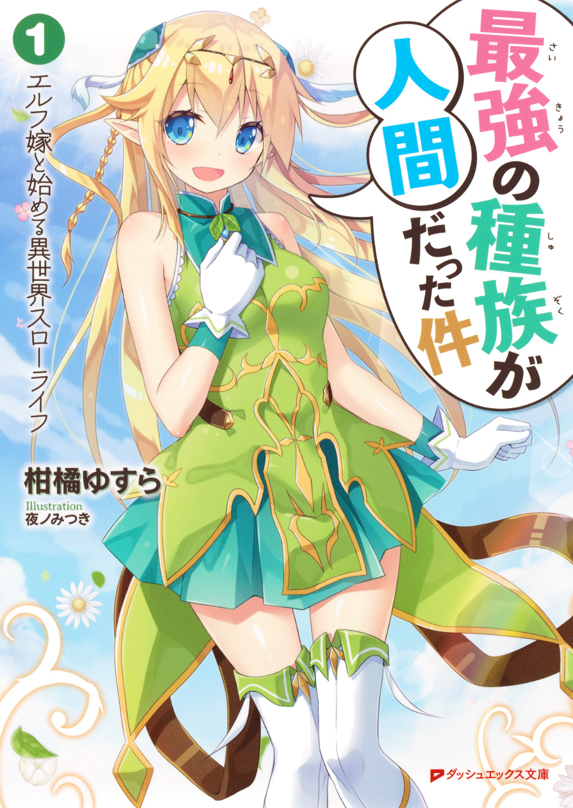
この本は縦書きでレイアウトされています。
また、ご覧になる機種により、表示の差が認められることがあります。
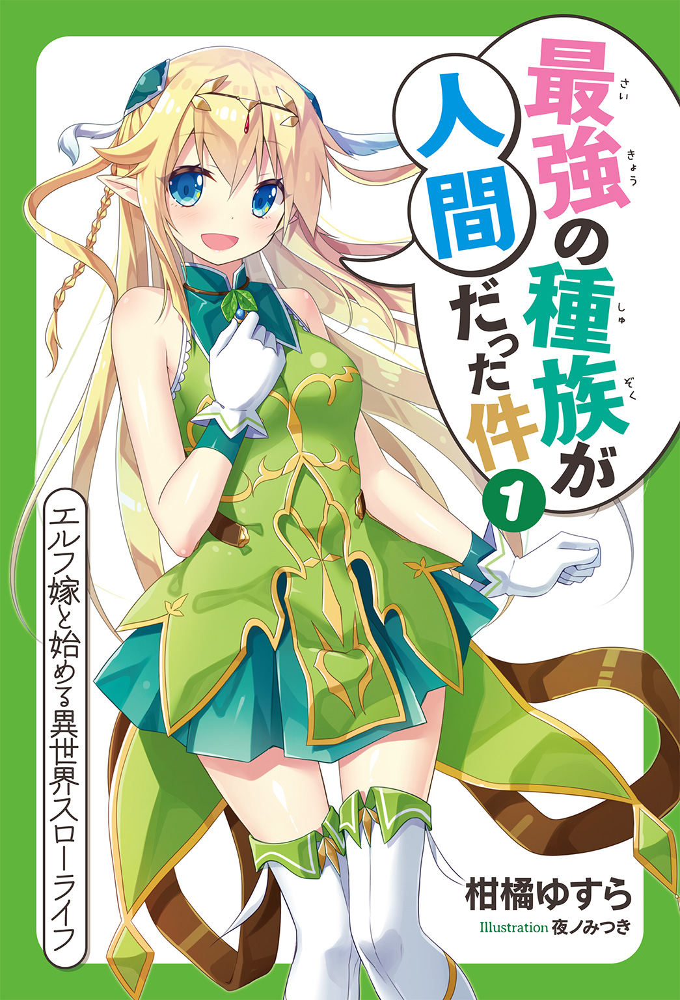
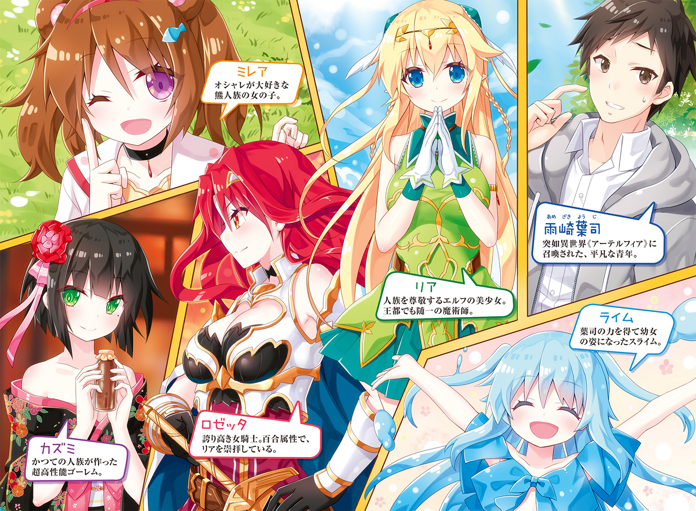
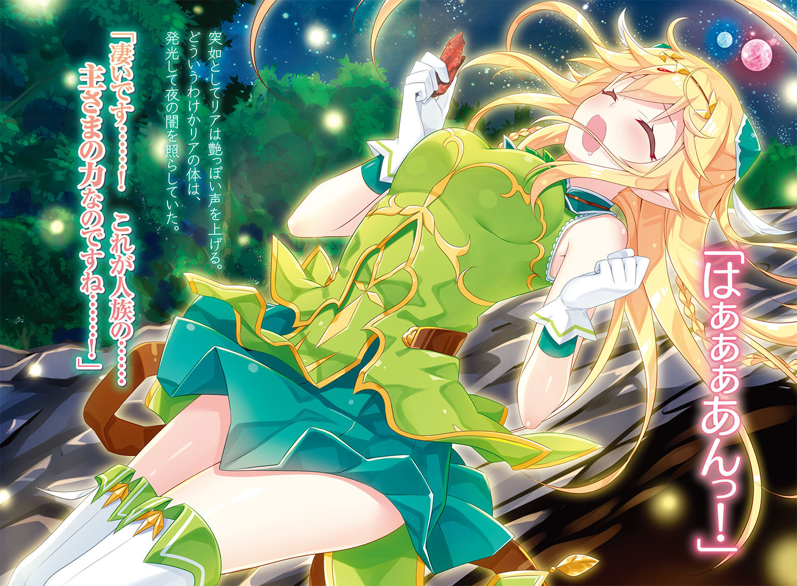
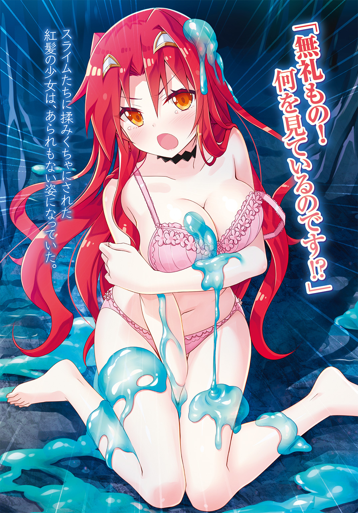
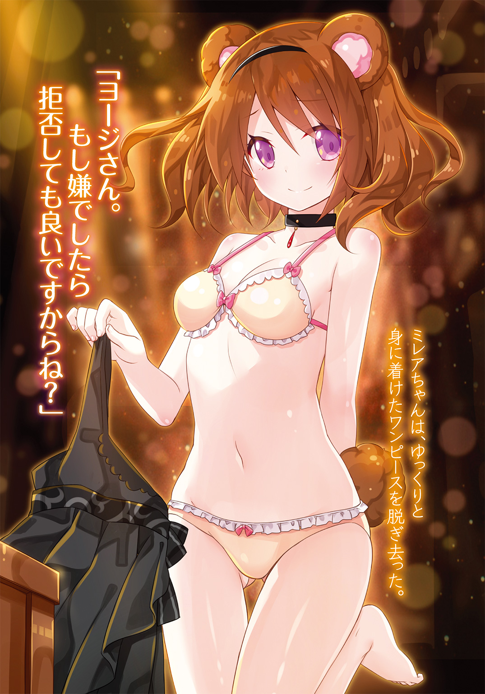
 ダッシュエックス文庫DIGITAL
ダッシュエックス文庫DIGITAL
最強の種族が人間だった件１
エルフ嫁と始める異世界スローライフ
柑橘ゆすら
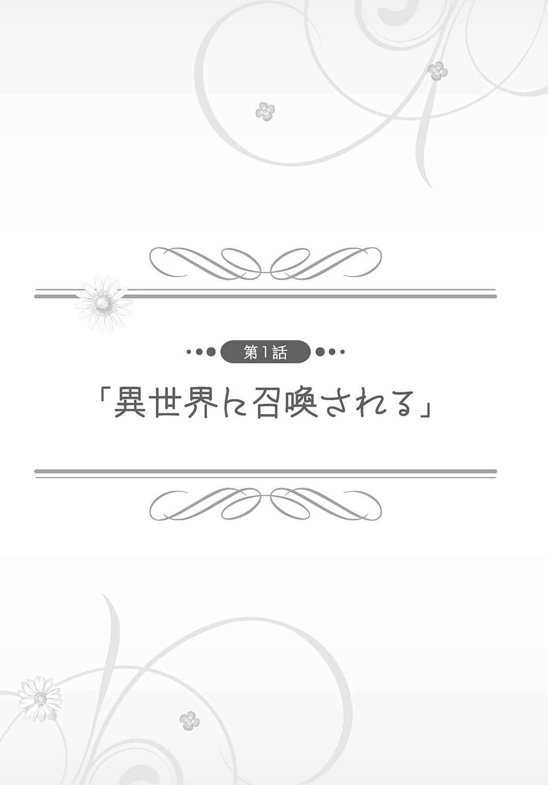
中途採用で入った健康食品会社に勤めてから三年くらいの月日が経つだろうか。
俺の心身の疲労は既に限界を迎えようとしていた。
会社での俺の仕事は健康食品の訪問販売である。
営業マン、というと聞こえが良いが、その実態は一種の押し売りであった。
一錠飲めば一キロ瘦せるダイエットサプリメント。
飲めばたちまち髪の毛がフサフサになる特製ドリンク。
俺の会社はそんな効果があるか怪しい健康食品を販売して利益を得ている。
こんな仕事でも定職につけているだけマシだろう。
ずっと自分にそう言い聞かせてきたが、そろそろ自分を騙すのも嫌になってきた。
「どこでもいい......。ここではない......どこか別の世界に行きたい......」
暫くベッドで蹲っていると俺の意識はやがて、深い微睡の中に落ちていく。
～～～～～～～～～～
所変わってここは剣と魔法の異世界《アーテルフィア》である。
アーテルフィアに存在する古代遺跡の住居跡に一組の男女がいた。
二人は王都から派遣された探索部隊であり、遺跡の調査を任されている立場にあった。
「凄い......！ こんなにも完全な状態で人族の聖遺物が残っているなんて......！」
探索隊のリーダーであるエルフ族のリアは興奮気味に口を開く。
「これは人間の髪の毛でしょうか......？ いずれにせよこれは、歴史に名が残るような大発見に違いありません！」
リアが遺跡の隅で埃まみれになった一本の毛に夢中になっていると、部下である男が騒ぎ立てる。
「隊長......ずるいですぜ！ その聖遺物とやら......俺にも見せてくだせえ」
獣人デクスは尻尾を振りながらも上司に向かって懇願する。
当初は大勢いた部下たちも、遺跡の探索で力尽きて今ではデクス一人になっていた。
「構わないですが......くれぐれも丁重に扱って下さい。その聖遺物は王国の宝物庫の中で厳重に扱う代物になりますから」
人族がアーテルフィアに存在したのは過去の話。
太古に絶滅した人族は、他人類を圧倒する膨大な魔力を保有していた。
その絶対的な力は、今回発見された聖遺物にも存分に表れており――。
髪の毛一本でも触れているだけで指が熱くなるような魔力が内包されていた。
「ケケケッ。ケケケケケッ」
リアから聖遺物を受け取った瞬間、部下の獣人は下卑た声を漏らす。
「......何が可笑しいのですか？」
「隊長さんよ～。貴女はもう少し人を疑うってことを覚えた方がいいぜ？ 俺はもう......貴女の後ろを歩くのはウンザリなんですわぁ」
普段の誠実で真面目に仕事をこなす態度から一変。
獣人族のデクスは完全にリアを舐めた口調を取り始めた。
（裏切りですか......。バカなことを......！）
部下の態度を目の当たりにしたリアは溜息を吐く。
たしかに今回発見された聖遺物を売れば、子孫七代まで遊んで暮らせるだけのカネが手に入るかもしれない。
けれども。
あくまでそれは彼が無事に遺跡からの脱出を果たした場合に限る。
王都でも随一の魔術師として名を馳せたリアにとって、デクスの謀反は恐れるに足りないものであった。
「............!?」
だがしかし。
次にデクスがとった行動はリアを絶句させる。
何を思ったのかデクスは――手にした髪の毛を口の中に入れたのであった。
「クハハハハハ！ スゲー！ 体中に力が溢れてくるぜ......！ これが......これこそが人族の力か！」
聖遺物を体の中に取り込んだデクスの魔力は急速な勢いで増加していく。
「......何をしているのです!? それがどんなに貴重な品か分からないのですか!?」
世紀の発見を失う瞬間を目にしたリアは、悲鳴に近い声を上げる。
人族がアーテルフィアに存在していたのは、一万年以上前の話とされている。
故に人族の体の一部が見つかることは滅多にない。
それも今回のように潤沢な魔力が内包されている品となると尚更である。
「知っているさ。知っているからこそ俺は......この力で世界を総べる王となるのだよ！」
聖遺物を完全に体内に取り込むことに成功したデクスの体は膨張していき――。
最終的にその身長は三メートルにも達するようになっていた。
過ぎてしまったことを後悔しても仕方がない。
「火炎連弾！」
リアは得意の火属性魔法をデクスの体に撃ち込んだ。
「ハッハー！ 無駄無駄！」
しかし、渾身の一撃は、デクスの体に到達する直前にかき消されることになる。
デクスの体内から放出される膨大な魔力が壁となって、リアの攻撃は完全に無効化されたのであった。
（......クッ!? 人間の......聖遺物の力とは......これほどのものでしたか!?）
絶望と言うより他はなかった。
その気になれば巨竜すら屠る攻撃が人族の力を取り込んだデクスの前では、何一つとして意味をなさなかったのである。
リアは思う。
髪の毛の一本でこれほどまでの力が宿るならば――生きた人族はどれほどの力を持っていたのだろうか。
疑問に思ったその直後。
そこでリアは更に信じられない光景を目にすることになる。
ヒュオオオオオン！ と。
突如として遺跡の天井を突き破り墜落する人影があった。
「ん......？ どこだろう......ここは？」
リアの視界に入ったのは――寝惚け眼をこする一人の男の姿であった。
～～～～～～～～～～
ふと意識が戻ったときに俺は、見覚えのない建物の中にいた。
なんだろう......。
夢の中にしては随分リアリティがある気がするぞ......。
俺の目の前にいるのは一組の男女である。
男の方はやたらと背丈が高く頭の上からはぴょこんと猫耳を生やしていた。
女の方は尖った耳が特徴的な絶世の美少女だった。
「なんだぁ？ お前？」
猫耳のオッサンは怪訝な表情を浮かべる。
「......わ、私ですか？ 私は唯の人間ですが」
この場合はなんと答えるのが正解だったのだろうか？
少なくとも俺は目の前の男のように腰から尻尾が生えているわけではないし、耳が尖っているわけではない。
だからまあ、『唯の人間』というのは我ながらナイスな返事だったと思う。
「人間だと......!? この野郎......俺様のことをバカにしやがってっ！」
ふぁっ!? 言い掛かりにもほどがある！
今の発言のどこにバカにする要素があったんだよ!?
正気を失ったオッサンは俺に対して大きく拳を振り下ろす。
「......なに？ 俺様の攻撃を受け止めただと......!?」
うげええええええ！
ビックリしたな！ もうっ！
いきなり殴ってくるから驚いたけど......このオッサン、なかなかの演技派である。
あれだけ勢いをつけて殴っているのに、力は完全にセーブしてくれているみたいだ。
そこで俺は考える。
たぶんだけど俺は......映画の撮影か何かに巻き込まれたんだろうな。
そう考えると、このオッサンの力が弱すぎることにも納得がいくし。
よーし。
そうと分かればこちらも期待に応えなければならない。
「どりゃあああぁぁぁ！」
俺は出来るだけ大袈裟に叫び声を上げると、そのままオッサンの体をちょこんと押してやった。
すると、どうだろう。
猫耳のオッサンの体は大きく宙に浮いて壁に激突したではないか！
「......ゴバァッ!?」
流石は演技派！
全く力を入れていなかったのに、オッサンはド派手なアクションを見せた。
この人たぶんハリウッドでも通用すると思うわ。
「畜生っ！ 覚えてやがれ！」
オッサンはそんな捨て台詞を残すと、「ぜぇぜぇ」と肩で息をしながらも俺の元から離れていく。
「人間さま......！」
オッサンが去ったのと同じタイミングで俺に声をかけてきたのは先程のエルフの美少女である。
「えーっと。キミは......？」
「申し遅れました。私はリア。エルフ族のリアと申します」
リアと名乗る少女は自己紹介を交えながらも俺に対して手を差し伸べる。
「俺の名前は葉司。人間の雨崎葉司だ」
「か、感動いたしました！ 貴方は本当に......人間さまだったのですね......！」
「............」
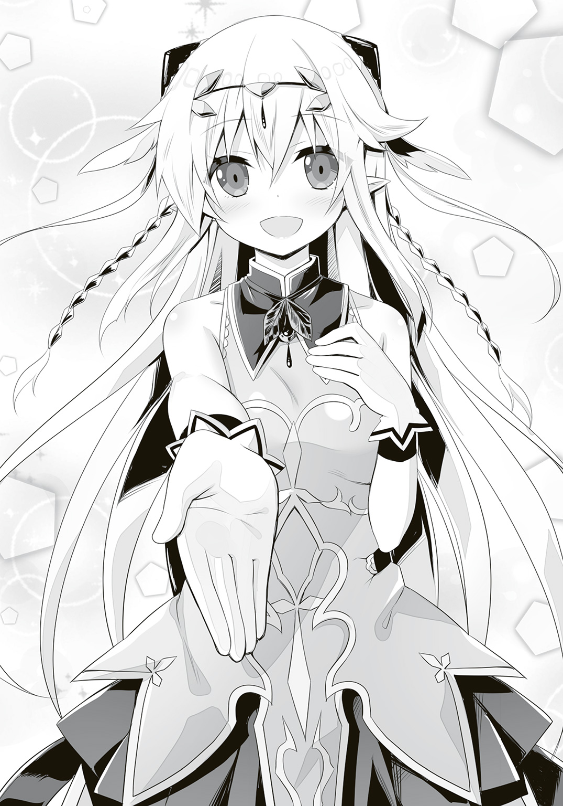
どうにも腑に落ちないな。
近くで見ると、リアの耳は作り物って感じがしなかった。
本当にここは映画の撮影現場なのだろうか？
それにしてはカメラがどこにも見当たらないのが不自然な気がする。
エルフの美少女から立て続けに謎の発言を受けることになった俺は益々、疑問を深めるのであった。
～～～～～～～～～～
「となると何だ......。俺は異世界に召喚されたっていうわけか？」
「......私も俄かには信じられません。しかし、少なくともヨウジさまの知っている世界と私たちの住んでいる世界が全く別物だということは確かのようです」
リアの説明によると、俺が今いる世界はドラゴンなどのモンスターが存在しているのだという。
ここまではいい。
剣と魔法のファンタジー世界に召喚されるのは、小説なんかを読んで憧れていた展開の一つである。
「......で、この世界では俺のような人間は、伝説的な存在になっているというわけか」
「はい。ヨウジさまのような人間さまは、私たち人類にとって『最古にして最強の種族』として知られています......。その存在は絶対で多くの宗教で信仰の対象になっている程なのです」
この部分に関しては、サッパリとイメージが浮かばない。
どちらかというと人間よりもリアのようなエルフ族の方が、高貴な印象があったんだけどな。
ゲームの世界の人間という種族は良く言うとバランス型、悪く言うと器用貧乏なイメージが強い。
「もう一度言います。ヨウジさま。貴方の存在は、ここアーテルフィアにおいては絶対です。事実として私は......人間さまが残した髪の毛一本で信じていた部下に裏切られたのですから」
「......そうか。それは辛かったな」
おのれ......猫耳のオッサンめっ！
こんなに可愛いエルフ耳の少女を裏切りやがって！
「なあ。リア。一つ疑問があるんだけど......俺はこのままこの世界で生活して大丈夫なのか？」
ちょっとばかり......嫌な予感がする。
考えてもみろよ？
この世界は人間の髪の毛一本で信頼していた部下に裏切られるところだぞ？
体の一部でも大騒ぎしているのに、生きた人間が街に出ようものなら一体どうなってしまうのだろうか。
「いいえ。もしヨウジさまの存在が世間に知られるようなことがあれば......」
「知られるようなことがあれば......？」
鬼が出るか蛇が出るか。
まあ、元を辿れば異世界召喚の時点で既に非現実的なことなんだ。
今なら大抵のことでは驚かない自信があるぞ。
「ヨウジさまの力を巡って世界各国で戦争が始まるでしょう」
俺を巡って人類滅亡の危機!?
予想の斜め上をいくリアの発言に対して、俺は底知れない衝撃を受けていた。
「どうしてそんなことに......？」
「ヨウジさまの力を手に入れれば世界を牛耳ることすら可能となるからです。アーテルフィアにおいて人間さまの体の一部は『聖遺物』と呼ばれ、戦略兵器級の扱いを受けているのです。生きた人間の存在が確認されるようなことがあれば......地上はたちまち戦火の渦に呑まれる可能性が高いです」
「............」
なんということだろう。
言っていることはギャグにしか思えないが、リアの眼差しは真剣そのものであった。
「......リア。教えてくれ。俺はこの世界でどうやって生きていけばいいんだ？ 出来ることなら俺は無用な争いはせずに静かに暮らしていきたいんだけど」
もとの世界では社畜生活を送っていたからな。
地球に対して特に未練があるというわけではない。
異世界で第二の人生をスタートできるのならば大歓迎である。
しかし、流石に世界戦争の渦中に投げ込まれるような事態だけは勘弁願いたい。
「一つだけ方法があります」
「......本当か!?」
やはりリアは頼りになる。
迂闊に外にすら出ることのできない状況を考えると、とにかく今はリアに頼るしかないだろう。
「ヨウジさま。貴方が自らの手で安住の地を築き上げるのです！」
意外な言葉を受けた俺は一瞬、自分が何を言われているのか分からなかった。
「えーっと......。それはどういう......？」
「順を追って説明いたします。この世界で人間族は信仰の対象となっているのは前に述べた通りですが......同時に私の部下のように人間さまの力を悪用しようとする輩も多く存在しているのです。
ですから外部からの脅威に対応するべく......拠点を構え、腕の立つ配下を揃えて襲撃に備えるのです。それ以外にヨウジさまが安心して生活を送る術はありません」
「......冗談だよね？」
「いいえ。冗談を言っているつもりはありません」
リアはニッコリと微笑むと、地面に片膝をついて忠誠のポーズをとる。
「ヨウジさま。貴方が望まれるのであれば私はここに......貴方の部下として永遠の忠誠を誓うと約束します」
色々と疑問は残るが......詳しいことは後で訊くことにするか。
リアのように可愛い女の子が仲間になるなら、安住の地とやらを築いてみるのも悪くないのかもしれない。
元々、こっちは現在の生活に辟易して常日頃から『誰かに必要とされたい』と願っていたのである。
そう考えた俺はリアと一緒に生活を送ることを決めるのであった。
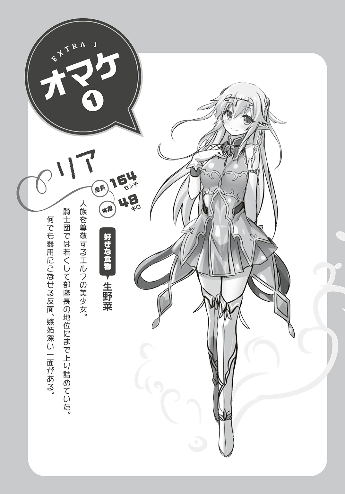
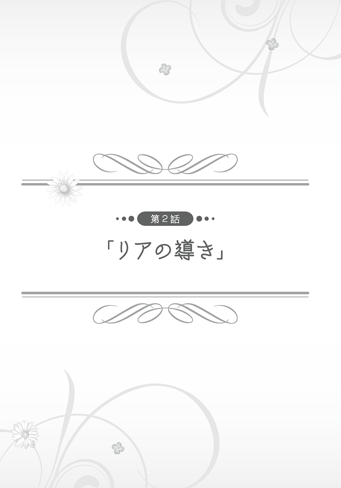
それから。
遺跡の外に出た俺は、リアに導かれるままに鬱蒼と生い茂る森の中を歩いていた。
「なあ。俺たちは一体どこに向かっているんだ？」
「主さま。恐れながらも進言いたします」
先程の一件からリアは俺のことを『主さま』と呼ぶようになっていた。
なんだかそれは嬉しくもあり、くすぐったい感じだった。
「我々が現在、最優先でしなければならないことは身を隠すことだと存じています」
「......身を隠す？」
「ええ。元々、私は王都から遺跡の探索を任されていたのです。私が帰らないのであれば調査部隊が不審に思って主さまの存在に勘付くやもしれません」
「考え過ぎじゃないか？ 俺の存在を示唆するような証拠はないんだろ？」
「......主さまの言うことは尤もです。しかし、警戒するにこしたことはありません。私の部下であったデクスが『人間がいた』という報告をしている可能性も捨てきれませんから」
「............」
なるほど。
石橋を叩いて渡るというわけか。
たしかに俺の力は一度あの獣人に見られているわけだし、慎重に動くに越したことはないのかもしれない。
下手に動いて人間の力を悪用しようとする輩に発見されたら大変だろうからな。
～～～～～～～～～～
「着きました。ここです」
リアに案内されたのは、森林の岩場に作られた小さな洞窟であった。
「......ここは？」
「ここは私の父が残した隠れ家です。父は人類学者だったので常に命を狙われる立場にありました。そういう事情もあって世界各地に隠れ家を作っていたのです」
「ちょっと待て。人類学者ってそんなに危険な職業だったのか？」
「ええ。父は職業柄聖遺物を扱うことが多かったですから。人間さまの力を悪用しようとする組織と日夜戦闘を行っていました」
「............」
知らなかった。
この世界の人類学者っていうのは、そんな秘密基地みたいなものを持っていたんだなぁ。
「......申し訳ございません。このような粗末な家に主さまを住まわせるのは心苦しい限りです」
いやいや。
凄く良い家じゃないか。
少なくとも六畳間のボロアパートでヒキコモリ生活を送っていた俺にとっては、天国みたいな環境である。
入口こそ小さかったが、中に入ると意外と大きな空間が広がっていた。
隠れ家という名に相応しく洞窟の中には本棚・食料庫などの設備が揃っている。
「主さまはこちらのベッドをお使い下さい。粗末な寝具を使わせてしまい恐縮ですが......今暫くお待ち頂ければと思います」
そう言ってリアが紹介してくれたのは、白色のシーツに包まれた簡易的なベッドであった。
「俺はどこでも構わないけど......リアはどこで寝るんだ？」
「私は敵の襲撃に備えて洞窟の入口を見張っていようかと。睡眠は一日三〇分、適宜とれば十分です」
「こういうのは普通、男女で逆じゃないか？ 俺は床で寝るからリアがベッドの上で寝てくれよ」
「そのような不遜な真似はできません！ こればかりはいくら主さまの頼みとはいえ流石に......」
ちょっと迂闊だったかな。
リアからすれば自分がベッドで寝ている間に、神様を床に寝かせているようなものなのかもしれない。
「う～ん。ならいっそ同じベッドで寝るっていうのはどうかな？」
せっかく大きなベッドなんだし、二人で一緒に使わないのは勿体ないだろう。
こんな洞窟の床で寝転がっていたら下手したら凍死しちまうかもしれないからな。
「......主さまとですか!?」
「ああ。ごめん。嫌だったら別の方法を考えるよ」
おっと。危ない危ない。
ここで断られでもしたら暫くはショックで立ち直れそうにないからな。
自分から話の腰を折りに行くことで精神の安定を保つスタイルでいこう。
「い、嫌なわけがありません！ 主さまさえ良いのであれば......大丈夫です！」
おおっ......。
マジでか!?
やけにあっさりと認めてくれるんだな。
床で寝かせるのはアウトだけど一緒のベッドを使うのはセーフなのか。
「......それではその......今後とも末永くお願いします」
心なしか頰を赤らめながらもリアは言う。
な、なんだよその結婚初夜の新妻のような台詞は......。
聞いているこっちまで恥ずかしくなってくるぞ。
それから暫くの間――。
リアは妙に落ち着きがないというかソワソワとした様子になるのであった。
～～～～～～～～～～
リアと一緒に家の中を掃除しているうちに日が落ちて夜になった。
掃除が終わった後は夕食の時間である。
そうは言っても状況が状況だけに贅沢なことは言っていられない。
俺はリアに勧められるまま食料庫の中にあった干し肉を齧り、簡易的な夕食を済ませることにした。
「夕食をとらないのか？」
洞窟の前に立ち健気に見張り役を務めるリアに声をかける。
「......食料庫の中に残っていた食料はそれだけだったのです。明日からは機を見つけて狩りを行おうと思いますので今暫くお待ち頂けないでしょうか？」
「............」
やはりそういうことだったか。
もう夜なのに突然『狩りにいく』とか言っていたから、食料事情が芳しくないんじゃないかって思っていたんだよな。
もちろんそんな危険な真似は直ぐに止めさせたわけだが。
「質問を変えようか。夕食を抜いているみたいだけど腹が減らないのか？」
「心配には及びません。三日くらいならば食事をとらなくても死ぬことはないと思います。それにどちらにせよ食料は干し肉のかけらしかありませんので......私が食事をとることは......」
「じゃあ、これを食べてくれよ」
そこで俺が差し出したのは夕食時に残しておいた干し肉である。
全て食べなかったのは正解だった。
もしかしたらリアが俺のために食事を抜いているんじゃないかと思っていたんだよな。
「い、頂くことはできません！ ただでさえ粗末な食事をさせてしまって恐縮だというのに......」
「いやいや。リアが腹を空かせていたら敵に攻められた時に困るのは俺だろ？」
説得するとリアは、渋々と納得をしてくれたようである。
そのままリアは目の前の干し肉をパクリと齧る。
直後――異変は起こった。
「はぁぁぁあんっ！」
突如としてリアは艶っぽい声を上げる。
「おい！ 大丈夫か!?」
どういうわけかリアの体は、発光して夜の闇を照らしていた。
「凄いです......！ これが人族の......主さまの力なのですね......！」
どうやら俺の心配は杞憂だったらしい。
よくよく見ると頰を上気させたリアは、『苦しい』というよりも『気持ちが良い』という感じの表情をしていた。
「ありがとうございます。主さまのおかげで私の魔力は、飛躍的に進化を遂げることが出来ました」
「......俺のおかげなのか？」
「おそらく頂いた食料に主さまの唾液が混じっていたのでしょう。主さまから頂いた唾液はこれまで私が食べたどんな食事よりも美味でした」
「............」
なるほど。
つまり要約すると俺と間接キスをしたことにより、リアはパワーアップを遂げることが出来たというわけか。
埃の被った髪の毛一本でもパワーアップできるのだから、生きた人間の生唾は効果テキメンなのだろう。
「どうやら先程までの空腹が収まっているようです......！ これで夕食をとる必要もなくなりました」
ははっ......。
この世界の人間パワーっていうのは本当に何でもアリなんだな。
色々とツッコミ所はあるけど、リアの腹も満たされたようだし結果オーライということにしておこう。
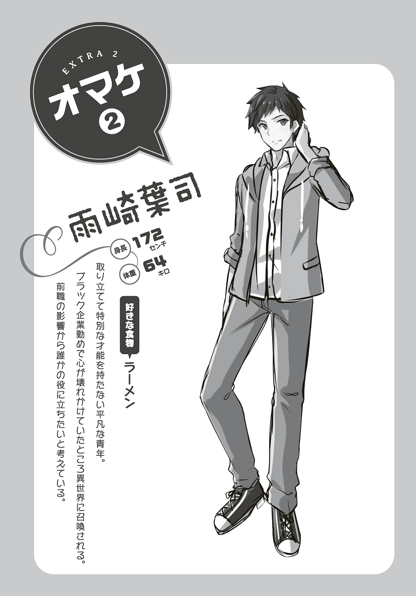
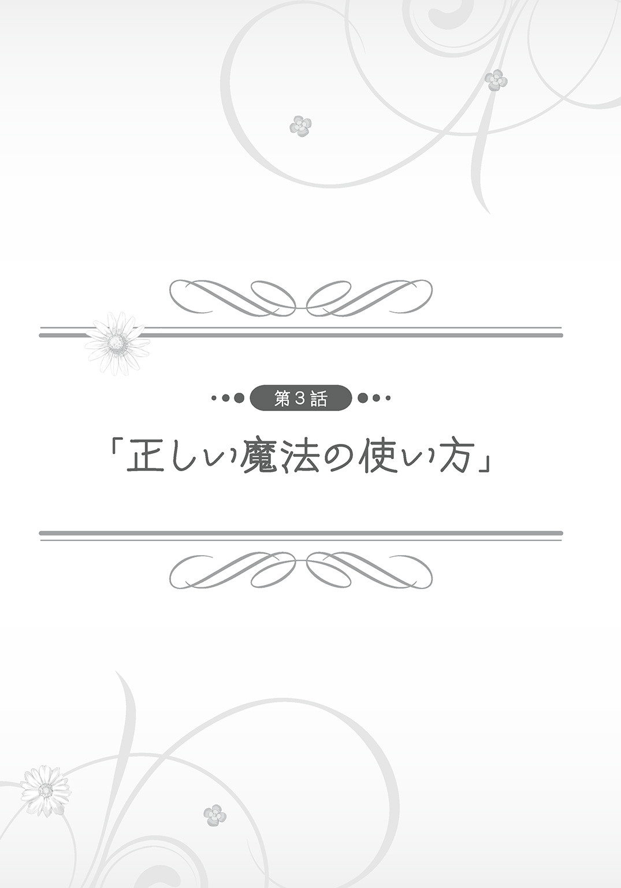
「スゥ......スゥ......主さま......」
翌日。
目を覚ますと、隣で寝ているリアの姿が目についた。
よくよく考えると彼女の顔をマジマジと見るのは初めてかもしれない。
起きていると緊張してロクに目を合わせられないからな。
それはともかく......。
改めて見るとリアは圧倒的な美少女だった。
身長は一六〇センチくらいだろうか。
手足はスラリと伸びており、モデルのような理想体型である。
胸はでかい。
無粋な言い方をすれば少なく見積もってもＦカップくらいあると思う。
こんな可愛い女の子と同居生活が出来るなんて、日本で暮らしていた頃には想像もしてなかったよなぁ。
「......と。まずいまずい」
ついつい時間を忘れて五分ほど魅入っていた。
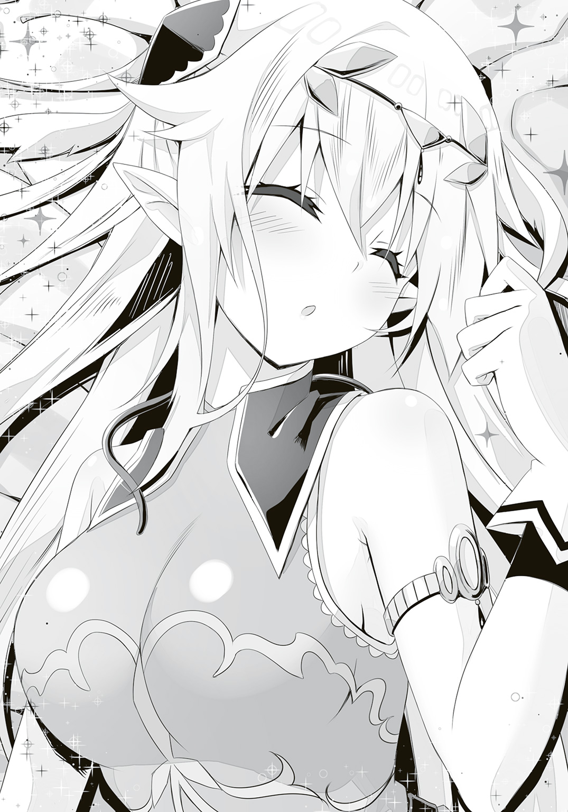
さてさて。
リアが起きる前に水でも飲みにいくか。
そう考えた俺が洞窟の外に出ようとした時であった。
洞窟の前に謎のドデカイ生物がいた。
「な、なんじゃこりゃー！」
「主さま！ どうなさいましたか!?」
俺の声を聞いて飛び起きたリアが顔を出す。
「......なるほど。どうやらそこにいるのはスライムみたいですね」
「この世界のスライムってこんなに大きかったのか？」
青色の体をしたスライム（？）は少なく見積もっても五メートル近い大きさであった。
人間どころか熊の一頭くらいなら余裕で飲み込んでしまいそうなサイズである。
「いえ。スライムというと駆け出しの冒険者が倒すことのできるモンスターです。このスライムは......何かしらの外的要因により過剰な魔力を取り込んだとしか考えられません」
「そうだったのか」
「ハッ......まさか......!?」
リアは何かに気付いたような仕草を見せて俺に視線を向ける。
「何か分かったのか？」
「主さま。昨夜のことなのですが......一人で森の泉に向かわれたのでしょうか？」
「そうだけど......。何かまずかったかな？」
ここに来る時に案内されたのだが、アジトの近くには清潔な水が湧き出す泉があった。
昨夜は喉が渇いて、こっそり水を飲みに出かけたんだよな。
「おそらくそれが原因かと思われます。主さまが口をつけた後の泉の水を吸収したことでスライムは異常な成長を遂げたのでしょう」
「............」
なるほど。
つまりは昨日リアと間接キスをしちまった時と同じような理屈か。
この世界に来た人間は落ち着いて水を飲むことすら出来ないのかよ......。
「......どうしよう？ このままでは俺たちは外に出ることもできないんだけど」
「ご心配には及びません。この程度の敵......主さまから力を授かった今の私なら......！」
リアはそう前置きすると、洞窟の前にいるスライムに対して手を翳す。
「火炎連弾！」
格好良く呪文を唱えたその直後。
リアの掌から巨大な火炎玉が立て続けに射出された。
俺と間接キスをしたことが関係しているのだろうか？
その威力は圧巻の一言に尽きるものであった。
「なっ......！」
おいおい。
このスライム......どんだけ強化されているんだよ？
驚くべきことに巨大スライムは、リアの魔法を受けても全くのノーダメージであった。
それどころか良い感じに魔法を吸収して以前よりも体積を増やしている様子である。
「つ、次は更に威力を上げて攻撃します！ 火炎連......」
「待ってくれ」
リアがスライムに攻撃を始めようとしたので慌ててそれを止めさせる。
「そもそもこいつ......俺たちに敵意がないんじゃないか？」
考えてもみろよ？
スライムの側からすれば攻撃のチャンスはいくらでもあった。
それなのに未だに攻撃してこないということは、向こうに敵意がない可能性が高いのではないだろうか？
「主さま!? 危険過ぎますっ！」
俺がスライムの元に近づこうとすると、リアは顔色を青くしているようであった。
「なあ。お前......何か用があって俺に会いにきたんじゃないのか？」
「キュー！ キュー！」
俺が質問を投げかけると、スライムはみるみると体を圧縮していく。
それから。
最終的にはバスケットボールくらいのサイズになったスライムは、俺の足元に擦り寄り服従のポーズ（？）を見せる。
「し、信じられません......！ モンスターが忠誠を見せるなんて......！」
俺とスライムのやり取りを見たリアは目を丸くして驚いているようであった。
「よし。これからお前の名前は『ライム』だ。仲間にしてやるから俺たちのために頑張って働くんだぞ？」
「キュー！ キュー！」
俺のネーミングが気に入ったのか、ライムは嬉しそうな声を上げる。
このような経緯もあって俺は......新しい仲間を得ることに成功するのであった。
～～～～～～～～～～
新しい仲間を得ることに成功した俺は、さっそく家の中でライムと遊ぶことにした。
「ライム。お手」
「キュー！」
「ライム。おかわり」
「キュー！」
声をかける度にライムは触手を伸ばしてくれる。
どうやらライムは俺の言葉を理解しているらしい。
今回のことでハッキリと分かったことがある。
この世界での人族は、迂闊に水を飲みに行くことすら出来ない程の凄まじい影響力を持っている。
俺の存在が明るみに出れば、このアジトとて安全な場所ではなくなってしまう。
これから平穏な生活を送るためには、ライムのような仲間をどんどん集めていく必要があるだろう。
「リア。狩りに行くのか？」
物置の中から弓を取り出したリアは、外出の準備を整えているようであった。
「ええ。まずは主さまの朝食を確保するのが最優先かと」
「ものは相談なんだが......邪魔にならないなら俺も同行できないかな？」
「......とんでもございません。しかし、主さまの手を煩わせるような仕事ではありませんよ？」
「問題ないよ。俺が行きたいから行くだけだしな」
外に出るのが危険な行為というのは理解できるが、流石にずっと家の中で待機しているのも退屈なんだよな。
この世界のことを知るためには、家の外に出て情報を仕入れていくべきだろう。
～～～～～～～～～～
洞窟の外に出てふと視線を上げると、そこで奇妙な光景を目にすることになる。
「あれ......月が二つある......？」
東には赤色の月。西には青色の月。
といった具合に仲良く並んでいた。
「不思議なことを仰るのですね。月とは普通二つあるものではないのでしょうか？」
「............」
環境が変われば常識もまた変わるということなのだろうか。
この世界の住人たちは、月とは二つあるものという認識でいるようであった。
「主さま。さっそく獲物を発見しました」
暫く森の中を彷徨い歩くと、リアは背負った弓を天に向ける。
弓の向けられた方向に目をやると、丸々と太った鳥が木の枝に止まっていた。
「あそこにいるのはホロホロ鳥ですね。この時期のホロホロ鳥は野鳥としては癖がなく、食用として重宝されています」
リアは流暢に説明をしながらも無駄のない動作で弓を射る。
その直後。
木の枝に止まっていたホロホロ鳥は、バサバサという羽音を立てながらも地面に向けて落下する。
矢のスピードが速すぎて獲物を仕留める瞬間を全く目で追うことができなかった。
「上手いものだな」
「いえいえ。大したことではありませんよ」
リアは謙遜しながらも仕留めたホロホロ鳥を袋の中に仕舞う。
「矢じりに魔法を込めれば威力も上がりますし、ある程度コントロールすることができますから。少し練習をすれば主さまも直ぐに同じことが出来るようになりますよ」
そうか。
さっきの矢には魔法が込められていたのか。
道理で矢のスピードが速すぎると思った。
「なあ。その魔法っていうのは俺でも使えるものなのか？」
「もちろん可能です。魔法とは体内の魔力を使ってこの世界の理に干渉する行為になっています。主さまほどの魔力があれば、直ぐにでも強力な魔法を使うことが出来ると思います」
マジか!?
そういうことは早く言ってくれよ。
格好良く呪文を唱えて魔法を使うのは、中学生の頃からの夢だったんだよな。
「どうすれば魔法を使えるんだ？」
「大切なのはイメージです。まずは何に対して魔法を使いたいか『対象の選択』を行って下さい」
「分かった。対象の選択だな」
そうだなー。
植物なんかを的にしても面白味がないし、せっかくだから俺もリアのように獲物を仕留めてみたい。
どこかに良い感じの獲物はいないものだろうか？
「あ！ あの空に浮かんでいる影はなんだろう？」
周囲を見渡してみると、空の上に謎の黒影が浮かんでいるのを確認することができた。
「あれは天竜と呼ばれる魔物ですね。雲の上で生活する天竜は、滅多なことでは地上に降りてこないことで知られています。
基本的には大人しい魔物ですが、一〇〇年に一度くらい人里に降りて悪さをするので冒険者ギルドでは高値の討伐報酬が設定されています」
「そうか。あれが竜だったのか」
ここからでは遠すぎてディティールまでは確認することができない。
けれども。
たしかにその影は細長くて蛇のような形をしていた。
どうせだから目標は大きく天竜を対象に魔法を使ってみるか。
「どうした？ 体調でも悪いのか？」
「......いえ。お気になさらず。少し立ち眩みがしただけですから」
天竜の話題になってからのリアは心なしか顔色を青くしていた。
もしかしてあのドラゴンに対して何か嫌な想い出があるのだろうか。
「ターゲットを選択したあとはどうすればいいんだ？」
「次は魔法の詠唱の工程です。体内の魔力を使って『どんなことをしたいか？』を頭の中に思い浮かべて下さい。イメージを鮮明にするために呪文を口にしても大丈夫です」
ふむふむ。
要するに詠唱といっても実際に呪文を口にする必要はないわけか。
せっかくなので俺は以前にリアが使っていた魔法を見よう見まねで試してみることにした。
対象はもちろん空を飛んでいる天竜である。
「火炎連弾！」
呪文を唱えた次の瞬間。
ここから遥か二〇〇メートルくらいの上空に巨大な火の玉が現れる。
火の玉は周囲の雲を蒸発させてしまう程の熱量を秘めており、天竜を目がけて飛んでいく。
俺の魔法を受けることになった天竜は、断末魔の悲鳴を上げる間もなく一瞬で肉体が灰燼に帰した。
なんだよ......今の魔法......!?
ドッキリとかじゃないよね......？
こええええええええええっ。
もしかしたら......核兵器並みの威力があるんじゃないか？
「お、驚きました。流石は主さまです！ この距離から天竜を仕留めてしまうとは......凄すぎます！」
不幸中の幸いといえたのは、初めて使った魔法が雲の上の生物を対象にしていたことだろう。
もし森の生物に向けて同じ魔法を使っていたら、ここら辺は全て焼け野原になっていたに違いない。
惨事を逃れたことに気付いた俺が、ホッと胸をなで下ろした直後であった。
ドガァァァァァン！ と。
突如として凄まじい爆発音が地上に向かって降り注ぐ。
何事かと思って空を見上げると、驚くべき光景がそこにあった。
「月が......消えている......？」
先程まで西の空に浮かんでいたはずの青色の月は、粉々に砕けて、綺麗サッパリと消失していた。
「流石は主さまです！ 天竜だけに飽き足らず月まで破壊してしまうとは！」
「......これ、ヤバくないか？ 月が消えると色々とこの世界の生態系に悪影響が出る気がするんだけど......」
「そうだとしても主さまが気にする必要はありません。脆過ぎる月が悪いのです」
「............」
リアの言うことにも一理ある。
俺が悪いんじゃない。
脆過ぎる月が悪いのである！
この事態に関してはあまり深入りすると、精神を病みそうになるので俺は思考を停止させることにした。
環境が変われば常識もまた変わるということである。
これから生まれてくる子供たちの常識が『月は一つである』に変わるだけの話だろう。
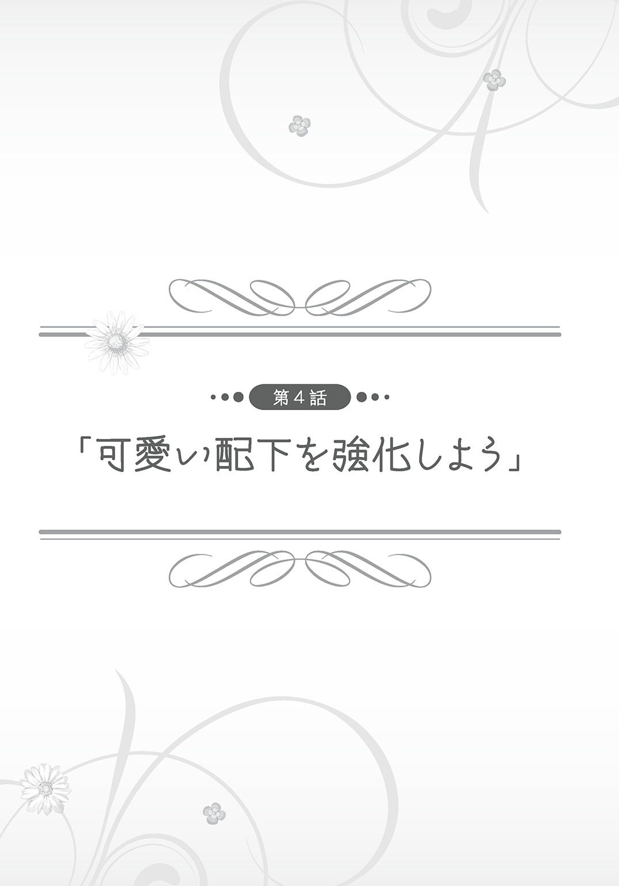
結論から言うと、本日の戦果は上々であった。
元々、エルフ族は森の中で暮らしていたこともあり、狩りの腕に秀でた種族であったらしい。
リアの頑張りもあって俺たちは、ホロホロ鳥の他に食料となる野草・キノコ・果物も入手することができた。
家に戻った俺は、洞窟の前に火をくべてホロホロ鳥を焼くことにした。
「......うん。これは美味いな！」
外はパリっと中はジューシー！
味付けは塩のみの素朴なものだが、それが逆に素材の味を引き立てているような気がする。
「主さまにそう言って頂けて何よりです。食料はまだまだ沢山ございますので、どんどん召し上がって下さい」
「ありがとう。リア」
朝から美少女エルフの手料理を味わえるとは感激である。
俺はリアに勧められるがままに次々とホロホロ鳥を平らげていく。
ああ。
リアのような女の子が嫁さんになってくれたら最高なんだけどなぁー。
美人で優しくて気が利いて料理まで上手いのだから向かうところ敵なしである。
「ところでリア。疑問に思っていたことがあるんだけど。どうして俺は、元の世界では魔法を使えなかったんだろう？ 俺のいた地球っていう世界では、人間なんて珍しい存在ではなかったのだが......魔法を使っているやつは見たことがなかったな」
「......たしかに不思議な話ですね。魔力とは全ての生命が持っている原初の力。魔力が存在しないということは考えられませんから」
リアは暫く「うーん」と頭を悩ませて。
「これは仮説に過ぎないのですが、おそらく主さまのいた地球という世界では、星そのものが暗黒物質で構成されていたのではないでしょうか？」
「......暗黒物質？」
「はい。暗黒物質には、周囲の魔力を吸収して無効化する効果があります。私たちの世界でもごくごく少量ですが採取されることがあるのです」
「なるほど」
そういう事情があるのならば、地球上の生物が魔法を使えないことにも頷ける。
もっとも......今となっては確かめようのない話なんだろうけどな。
～～～～～～～～～～
「ふぅ......。食った食ったぁ......」
食事が終わった後は休憩の時間である。
俺はベッドの上で横になり食後の余韻に浸っていた。
いや。流石にちょっと食べ過ぎたか。
横になってたら水を飲みにいきたくなってきたな。
「よし。ライム。一緒に散歩にいこうか」
「キュー！」
俺がライムと一緒に散歩にいくのは、ボディーガードの役割を務めてもらう意味も兼ねている。
森の中にはスライムの他にも危険な魔物がいるらしい。
さらに言うとライムには、俺が歩き回った際に地面に落ちる聖遺物を回収する役目を任せている。
本当ならリアに頼んだ方が確実なんだけど、水を飲みにいく度に連れまわしていたら気の毒だしな。
「お待ちください！」
外に出ようとする俺をリアが呼び止める。
「折り入って相談させて頂きたいことがあるのですが......。よろしければ......私に主さまの聖遺物を与えて頂けないでしょうか？」
「ん？ どうしたよ急に」
「今日のことで痛感しました。私は主さまの配下として力不足の身......。主さまから聖遺物を頂くことで力をつけたいのです」
「............」
う～ん。
少しライムにばかり頼り過ぎたか。
俺がライムを頼りにすればするほど、リアは複雑な気持ちになるのかもしれないな。
「分かった。なら昨日のように間接キスみたいなことをすればいいかな？」
照れ臭い気持ちはあるが、事情が事情なだけに悠長なことは言ってられない。
仲間を強化することは俺にとって命に関わることだからな。
「いえ。その......出来れば主さまの口から頂けると助かるのですが......」
「直接!?」
「はい。そちらの方が魔力の摂取効率が格段に向上するはずです。もちろん無理にとは言いません。考え方によっては私の発言は......主さまに口付けを強要しているようにも受け取れますから」
まさか......まさかまさか！
こんなに可愛い女の子とキスできるチャンスが巡ってくるとは思わなかった！
「リアが嫌じゃないなら全然オッケーだよ」
「......本当ですか!?」
快諾すると、リアはパァッと花が咲いたような笑みを浮かべる。
か、勘違いしないでよねっ!?
リアは魔力を摂取してパワーアップをしたいだけで、俺はその期待に応えているだけなんだからねっ!?
それ以上の意味はない。
それ以上の意味はないのである。
「それでは......失礼します......」
俺の隣に腰を下ろしたリアは、そっと顔を近づけてくる。
し、信じられない。
俺は今からこんなに可愛い女の子とキスをしてしまうのか......？
動揺するのも束の間、リアは一切の躊躇なく唇を重ねてきた。
キスといっても海外ドラマで家族同士がするライトなものとは訳が違う。
唾液の交換を目的とした濃厚なやつである。
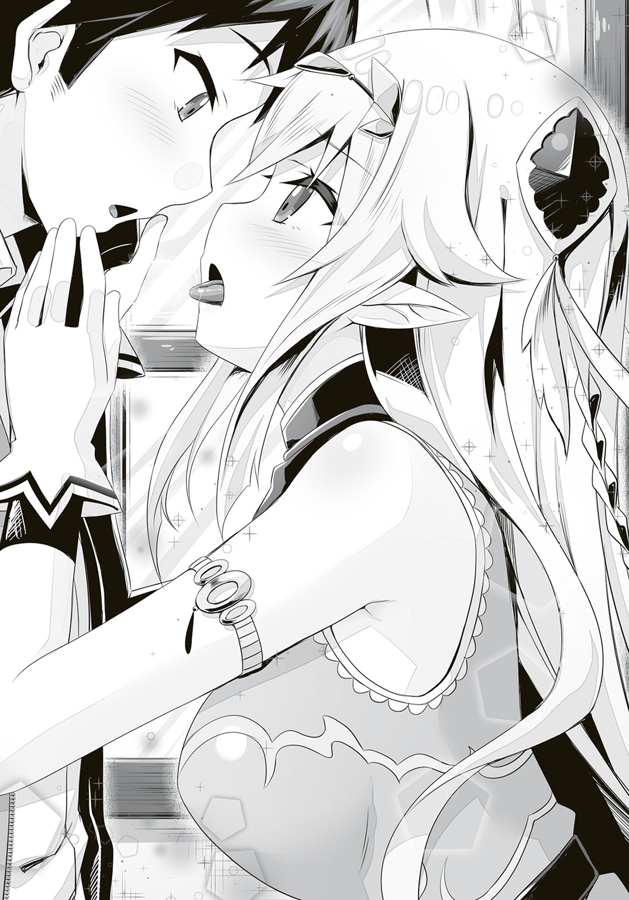
「んちゅっ......ちゅっ......」
それにしても流石にこれは積極的過ぎないか!?
動物がエサを貪るように。
執拗に。丹念に。
俺の舌に自分の舌を絡めてくる。
こんな激しいキスは見たことがないぞ!?
前歯に、奥歯に、舌に、歯茎に、喉に......。
放っておくと口の中の全ての場所を舐めまわされてしまいそうである。
「凄いっ......！ 主さまの......美味しいですっ......！ どんどん......どんどん......力が溢れてきます......」
もしかしたら人族の唾液には、媚薬のような効果があるのだろうか。
先ほどからリアの表情がどうにもおかしい。
顔は紅潮し、目は大きく開かれて白目に近い状態になっている。
表情はだらしなく緩み、普段のような凜とした雰囲気はどこにもなかった。
ええい！
こうなったらもうどうにでもなれ！
覚悟を決めた俺は、なすがままにリアの舌を受け入れるのであった。
～～～～～～～～～～
ところ変わってここは、葉司たちのアジトから三〇キロほど離れた地点に存在する王都《ミズガルド》である。
原因不明の爆発により月が破壊されてからというもの王都は、未曾有の大パニックに陥っていた。
「ええい！ こんな大切な時に第二調査部隊はまだ戻らんのか！」
王都の神殿の中で青筋を立てて部下を叱咤している男が一名。
騎士団長のカズールである。
上から月破壊の事後処理の依頼を、一手に押し付けられることになったカズールは焦っていた。
街の住人たちは、今回の事件の原因を『魔族の反乱』と決めつけて、徒に騒ぎを大きくしている。
何はともあれカズールが最優先に行わなければならないことは、月破壊の原因を究明することであった。
「騎士団長。ただいま戻りました！」
神殿の中に年若い少女の声が響き渡る。
細見の体軀に不釣り合いな長剣を携えた少女の名前はロゼッタと言った。
新人類の中でも取り分けバランスに優れた種族である《ニューマン》のロゼッタは、若くして騎士団のエースの座を恣にしていた。
「おお！ ロゼッタよ......！ よくぞ戻った！ して、調査の結果はどうであった!?」
カズールは今回の月破壊騒動の原因は、新しく発見された古代遺跡にあると踏んでいた。
人族が残したとされる古代遺跡には、高度なテクノロジーを有した未知の兵器が存在することがあったからである。
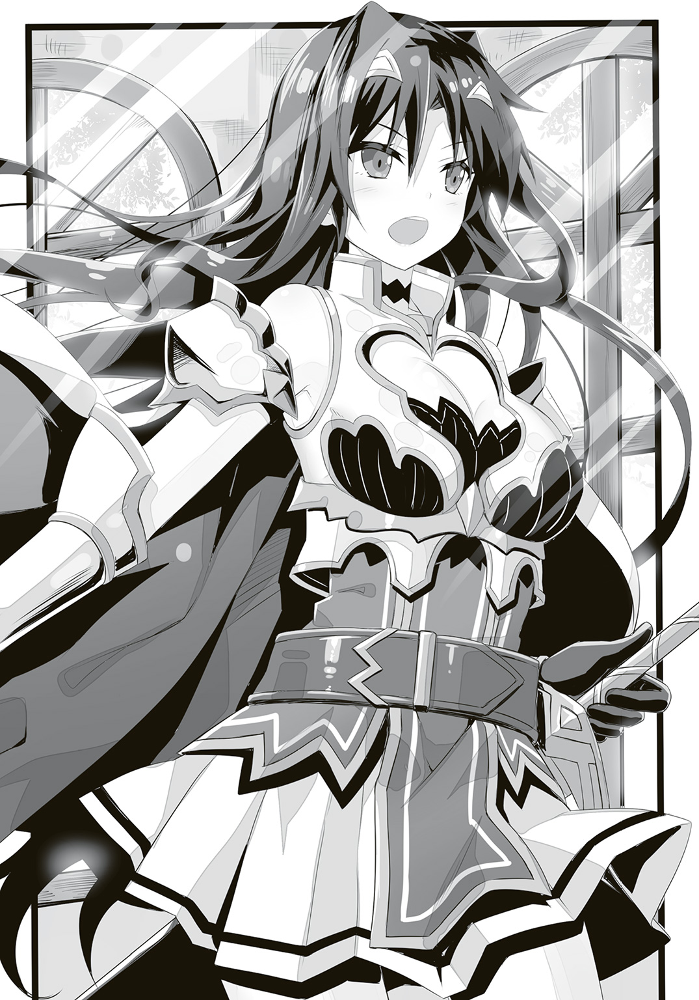
それらはレガリアと呼ばれ、発見次第、国の宝物庫の中に収められるのが決まりとなっていた。
仮に月を破壊するようなレガリアが見つかったのであれば、どんな手を使っても入手しなければならない。
他国の手に渡るようなことがあれば――世界の情勢は一瞬にしてひっくり返ることになる。
「まずはこちらをご覧下さいまし。今回の探索で発見されたアイテムになります」
ロゼッタが取り出したアイテムを見たカズールは驚きで目を見開く。
「これは......髪の毛......？ もしや聖遺物か......!?」
その聖遺物には常軌を逸した量の魔力が込められていることが分かった。
職業柄、聖遺物を扱うことが多いカズールであったが、これまでに魔力を有した聖遺物を見たことはなかった。
「なんと面妖な......。この聖遺物は従来のものに比べて一〇倍......いや、それ以上の魔力が内包されているように見えるぞ!?」
「当然ですわ。この聖遺物は一万年前に生存していた人族が残したものではなく......現代を生きる人族が残したものになりますから」
「なんだって......!?」
その言葉はカズールに未曾有の衝撃を与えるものであった。
「それは人族の生き残りが現代に存在するということか？」
「さぁ。わたくしもそこまでは......。しかし、そう考えると月が破壊された理由についても推測を立てることが出来るのではないでしょうか？」
「う、ううむ。たしかに」
太古の昔、人族が滅びた理由はその力があまりに強大過ぎたからだと言われている。
彼らが争いあった結果、大地は焦土と化して、自然と衰退していったという。
人族の絶滅後は、獣人・エルフ・ニューマンと言った新人類が生まれ今日まで文明を築いてきたのであった。
「騎士団長。遺跡の探索ですが......引き続きわたくしに任せては頂けないでしょうか？」
「む。しかし、調査の期限は今日までと指定したはずだが？」
「はい。ですが、個人的に気がかりな点がありまして......。部下は必要ありません。一月ほど時間を頂けないでしょうか」
「............」
ロゼッタの真剣な眼差しを目の当たりにしたカズールは心の中で溜息を吐く。
付き合いが長いカズールは、ロゼッタが一度決めたらテコでも動かない頑固なタイプであることを知っていた。
「分かった。後のことはお前の好きなようにするがよい」
「......ハッ。ありがとうございます！」
一礼すると、ロゼッタは足早に神殿を後にする。
（待っていて下さいまし。お姉さま......！）
リア率いる第一調査隊は、記録の上では既に全滅したということになっている。
だがしかし。
遺跡の中にリアの死体は見つけることが出来なかった。
ロゼッタは世界中の誰よりもリアのことを尊敬していた。
良家の令嬢に生まれたワガママ娘に過ぎなかったロゼッタが今の地位にまで上り詰めることが出来たのは、偏にリアの指導があったからである。
誰よりも気高く、強かったあの人が死んでいるわけがない。
もしかしたら遺跡探索任務で怪我をして、どこかで体を癒しているという可能性も考えられる。
（わたくしが絶対に貴女のことを見つけてみせますわ......！）
決意を新たにしたロゼッタは、遺跡周辺エリアの探索を開始するのであった。
それにしても昨日は......凄まじい経験をしてしまったな。
いくらパワーアップのためとはいっても流石に調子に乗り過ぎた。
リアとのキスは一〇分にも及ぶ長丁場の後に幕を下ろすことになる。
これは後で分かった話になるが......人族の体液は他種族に対する強力な催淫作用を含んでいるらしい。
まさか強化中にリアの体力が先に底を尽きて気絶してしまうとは思わなかった。
この力があれば元の世界でも、風俗嬢の男バージョンの仕事（名前は知らない）で食べていける気がする。
「......さて。水でも飲みに出かけるかな」
このところ泉に出かけるまでのボディーガードは、すっかりライムの役割になっている。
リアと一緒に行くこともあるが、忙しい時にあまり迷惑をかけたくはないからな。
「ライム！ いるかー？」
洞窟の中にいるであろうライムに声をかける。
リアが寝ている時はライムが代わりに洞窟の入口を見張ることになっていた。
「キュー！ キュー！」
「なっ......！」
入口の方から歩いてきた生物を見た俺は目を疑った。
これは一体......どういうことだ？
そこにいたのは、綺麗な青色の髪を持った全裸の幼女であった。
「もしかして......お前がライムなのか？」
「キュー！」
青髪の幼女はコクリとうなずく。
驚いた。
たしかに鳴き声はスライム形態のライムと同じものだ。
「キュー！」
「......ちょっ!?」
何を思ったのかライムは全裸のまま俺に抱きつき――。
そのまま胸の辺りに頰ずりをしてきた。
「そうか。やっぱりお前はライムだったのか！」
こういう仕草をするのは、甘えているときのライムの癖だった。
しかし、どうしたものか。
これまで俺がライムと気軽に散歩に行けたのは、彼女がスライムの姿をしていたからであって......。
人間の姿......まして幼女になったライムに対し、同じように接するのは無理がある。
「主さま？ 一体何をしているのですか？」
声のした方に目をやると、そこにいたのはリアであった。
ぷくりと頰を膨らませたリアは、かつてないほど不機嫌な表情をしていた。
「......あっ」
冷静になって周囲を見渡した俺は、そこで全てを察することになる。
終わったー。
俺の平穏な生活に終了のホイッスルが響き渡りましたー。
寝間着姿の俺＆全裸の幼女。
そりゃ、色々と勘違いする要素は盛りだくさんだよな。
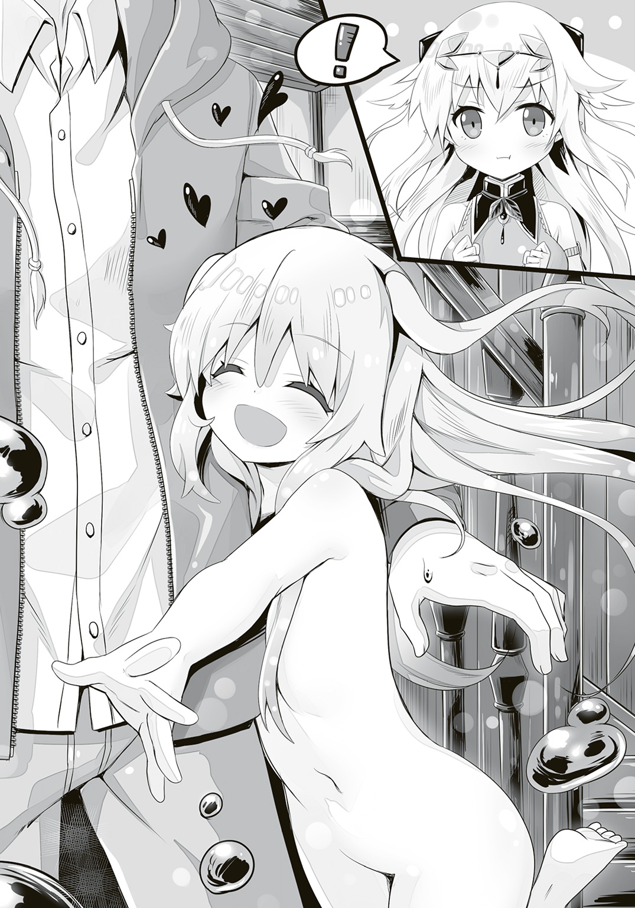
自らの置かれた状況に気付いた俺は、必死のタイムアウトを取るのだった。
～～～～～～～～～～
「なるほど。そういうことでしたか......」
事情を話すと、なんとかリアは納得してくれたようである。
「しかし、驚きました。膨大な魔力を摂取した魔物が人間の姿になることがあるという話は聞いたことがあったのですが......。まさか実際に見る日が来るとは思ってもいませんでした」
リアによると、ライムが人化した原因はやはり人族のパワーを取り込んでいたことに起因するらしい。
「人化の原因については分かったんだけど......どうして女の子の姿になったんだろ？」
やはりそこが一番気になる謎であった。
体付きなんかには少し幼さを残しているが、顔立ちは俺の好みにドストライクなんだよな。
「最初に断っておきますと、分裂を繰り返して増殖するスライム族に性別という概念はありません」
「なんだと......!?」
がーん！
こんなに美少女なのに性別不明だったのか!?
騙された。
お前には完全に騙されたよ！
「おそらくライムは......本能的にそちらの方が主さまからの寵愛を受けやすいと判断したのではないでしょうか？」
「あー」
言われてみれば納得である。
たしかに俺だってモンスターよりかは、可愛い女の子の方を贔屓にしたいと思ってしまう。
もしライムが、俺の寵愛を受けるために今の姿になったのならば相当な策士である。
「ライムのことは分かった。ところでリアは何か体調に変わったところはないか？ 取り込んだ聖遺物の量ならリアだって負けていないと思うんだが」
「もちろん変わりました！ 私の魔力は既に一〇倍に膨れ上がっています。これも全て主さまのおかげです」
フフンと鼻を鳴らしながらもリアは語る。
「そ、そうか」
ちょっと残念。
俺としてはもっとこう......Ｆカップ（推定）のおっぱいが更にでかくなるみたいな効果を期待していたわけだが。
そうそう上手くは人間パワーも左右しないみたいである。
「あとは......視覚と聴力が大幅に強化されているのを感じます。これならば敵が侵入してきたときも早く気付くことができるでしょう」
「それは心強いな」
この家の入口は一つしかないので逃げることが出来ないが、リアが敵の存在を教えてくれたら心の準備はできるだろう。
「......主さま。下がっていてください」
唐突に警告をするリアの表情は険しいものであった。
「さっそくで悪いのですが、どうやら我々のアジトに賊が上がり込んできたようです」
「......!?」
リアに言われて耳を澄ます。
と、たしかに洞窟の中にコツコツという足音が響いているようであった。
「敵の数は一人のようですね。足音から分析すると、性別は男で間違いないと思います」
「それで......相手は強そうなのか？」
「いいえ。まるで話にならないほど弱いです。この程度の相手ならば主さまの出る幕もなく私の小指一本で倒せてしまいそうですね」
ふむふむ。
初めての防衛戦の経験を積むにはおあつらえむきの相手というわけか。
「主さまの存在を知られた以上は生かしておくわけにいきません。後のことは全て私にお任せて下さい」
リアはアジトの物置の中から巨大な武器を取り出して鼻息を荒くしていた。
いわゆるモーニングスターというやつだろうか？
棘付きの鉄球を遠心力で回す仕組みの武器であった。
「おいおい。どうしてそんな物騒なものがあるんだ？」
「このアジトは元々、人類学者である祖父が人族の力を悪用しようとする組織と戦うために作ったものですからね。侵入者を撃退するための武器には事欠きませんよ」
「............」
そういう事情があったのか。
けどまあ、そこでモーニングスターをチョイスするお前が頼もしくもあり、恐ろしくもあるよ。
「ふふふ。神聖なるアジトに土足で上がり込んでくる痴れ者よ！ 自らの犯した罪を思い知ることです！」
初めての戦闘を、手柄をあげるチャンスと考えたのだろうか？
ブンブンとモーニングスターを振り回しているリアは、必要以上に張り切っている感じだった。
「なあ。リア。この戦闘は俺に任せてくれないか？」
「......主さまにですか？」
「ちょっとばかり自分の力がどんなものか確かめてみたいんだ」
「......承知いたしました。しかし、くれぐれも無理をなさらぬようお願いします」
「了解」
リアに任せたら本気で侵入者を殺しかねない。
相手も強くないようだし、ここは俺が頑張ってみることにしよう。
「へぇ......。お前さんがこの洞窟の家主ってわけかい」
足音のする方に向かっていくと、そこにいたのは頭から獣耳を生やした大柄な男であった。
体はでかい。
一八〇センチを優に超えているだろう。
右手には大きな体格に相応しい大振りの剣を携えている。
おいおい。
話にならないほど弱いんじゃなかったのかよ!?
彫りの深い顔立ちをした大男は......めちゃくちゃ武闘派な雰囲気であった。
「今すぐ金目のモノを置いて立ち去りな。そうすれば命だけは助けてやろう」
「......い、いやだ！」
この家は俺の居場所だ。
アジトの奥にはリアもいる。
みすみすこの男の言うことを聞くわけにはいかない。
「そうかい......。なるべく手荒な真似はしたくなかったんだけどな」
男は俺を見下すような冷酷な目をしたかと思うと、勢いをつけて剣を振り下ろす。
「ひいっ」
退却！ 退却！
ここは距離をとって態勢を立て直そう！
いや。
我ながら情けないとは思っているよ？
けれども、仕方がないだろう？
刃物を持った人間に攻撃されるのがこんなに怖いとは思わなかったんだから。
「ハハハッ！ いつまで逃げられるかな？」
「あわわわ......」
何か......何か反撃の手段はないのか!?
魔法で攻撃することも考えたが、今の俺が魔法を打てば家ごと破壊しかねない。
あれ。
もしかして俺......詰んでるんじゃね？
「主さま！ 頑張って下さい！」
声のした方を見ると、不安気な表情に駆られたリアがいた。
「ほう。エルフ族とは珍しい......。しかも、これほどの上玉は見たことがねえぜ！」
リアの姿を見た男は、下卑た笑みを浮かべる。
「奴隷娼館で売り払えば大金が手に入るか......？ いや、これほどの美しさだ。きっと貴族と直接取引をした方が......」
この男は何を自分勝手なことを言っているんだ？
リアを奴隷になんて......そんなことは断じて許すわけにはいかない。
頭の中でプツンと何かが弾けるような音を聞いたような気がした。
「くらええええ！」
刀が怖いなら目を瞑ればいい！
そう考えた俺は、両目を閉じて男に向かってタックルした。
「......ゴバァッ！」
おかしいな。
手応えとしては服の先にカスっただけだったのだが、それでも威力は十分なものだったらしい。
目を開けると、そこには壁に激突して吐血した男の姿があった。
「主さまっ！」
勝負に決着がついたことを悟ったリアは俺の体に飛びついた。
「......主さま。この度は......私のことをお守り頂きありがとうございます」
あまりに強く抱き付いているので、リアの大きな胸が俺の腹の上のあたりのところでむにゅりと形を変えていた。
......この感触を味わえるだけでも、進んで戦闘に参加した甲斐があったというものだろう。
こうして俺の異世界デビュー戦は、辛くも勝利という結果で幕を下ろすのであった。
～～～～～～～～～～
「この男の処遇はどのようにしましょうか」
「手荒な真似はしたくない。まずは起きるのを待って色々と事情を訊いてみることにしようか」
どうやら俺のタックルはよほど打ちどころが悪かったらしい。
放置しておくと大惨事になりそうだったので、リアの回復魔法により応急処置を施してもらうことにした。
ちなみに目を覚まして暴れられても困るので、アジトの中にあった縄を使って侵入者の体は縛っている。
「承知いたしました。全ては主さまの意のままに」
そもそも男はどうして俺の家に侵入してきたのだろうか？
なんとなく金目当てっぽい言動だったけど、それにしたってもう少し上手いやり方があったろうに。
「目が覚めたか」
「......そうか。オレも焼きが回ったっていうことか。まさかこんなモヤシに負ける日が来るとは思わなかったぜ」
自らの敗北を悟った男は、自虐的な笑みを零す。
「お前の目的はなんだ？ どうしてこんなことをした？」
「......ハンッ。薬を買うためにオレにはカネが必要だったのさ」
「薬？」
もしかしてこの男......薬物依存症なのか？
いや。
それにしては冷静な気がするし......根が悪い人には見えないんだよな。
「妹が病気を患っていてね。毎月、薬を与えないと生命を維持することが出来ねえのさ。けど生憎とウチの村は貧乏でね。このままだと明日にはもうオレの妹の命が......」
「あー」
となると強盗紛いの行為は全て妹のためだったというわけか。
う～ん。
決して褒められたことではないんだろうけど、妹のためだったと考えると途端に許してやりたくなってきたな。
「なあ。リアの魔法で妹さんの病気を治してやることはできないのかな？」
「申し訳ありません。私の魔法は肉体の傷は治せても流石に病気までは......」
ダメだったか。
魔法を使って病気を治せれば平和的な解決になると思ったのだが......そう上手くはいかないらしい。
「しかし、病気を治すことのできる方法が一つだけあります」
「......本当か!?」
「はい。主さまの聖遺物を与えれば良いのです。主さまの魔力を以てすれば、どんな病気もたちどころに治ることでしょう」
「なるほど。その手があったか！」
この世界では人間パワーに勝るものはない。
なんといってもスライムを美少女に変えちまうくらいだからな。
きっと病気なんて直ぐに良くなるだろう。
「しかし、個人的にこの方法はオススメできません。我々はあくまでアジトで身を潜めなければならない身。無闇に聖遺物を他人に与えると足がつく恐れがございます」
リアの意見は尤もである。
戦力が整っていない内に俺の正体がバレることになると、悪意を持った相手に襲われるリスクが増してしまう。
「すまん。リア。どうしても妹さんを助けたいのだが......」
無謀だということは分かっている。
けれども、俺はもとの世界で生活していた頃から『誰かに必要とされたい』と願っていたのである。
俺の力で救える命があるのなら見殺しにしたくはない。
「......分かりました。そこまで仰るのでしたら情報工作については私に任せて下さい」
「出来るのか!?」
「ええ。他人に約束を守らせることを強制する『呪印』の魔法を用いれば可能かと。私の命に代えましても主さまの秘密は守り通してみせましょう」
流石はリア！
本当に最初に仲間になってくれたのがリアで良かったよ。
「もし良かったらこれを使ってみないか？」
俺は髪の毛を一本抜くと、男に対して差し出すことにした。
「こ、こいつは......!? なんてスゲー魔力なんだ！」
俺の髪の毛を受け取った男は目を丸くして驚いているようであった。
「......それを与えられたら妹さんの病気はきっと良くなると思う。だから強盗なんてバカな真似はやめろよ」
「......くっ。すまねぇ。俺の名前はアダイ。この森に住んでいる熊人族のアダイだ！ いつかこの恩は返すぜ！」
拘束から解放させてやると、熊人族の男は目に涙を溜めながらも感謝しているようであった。
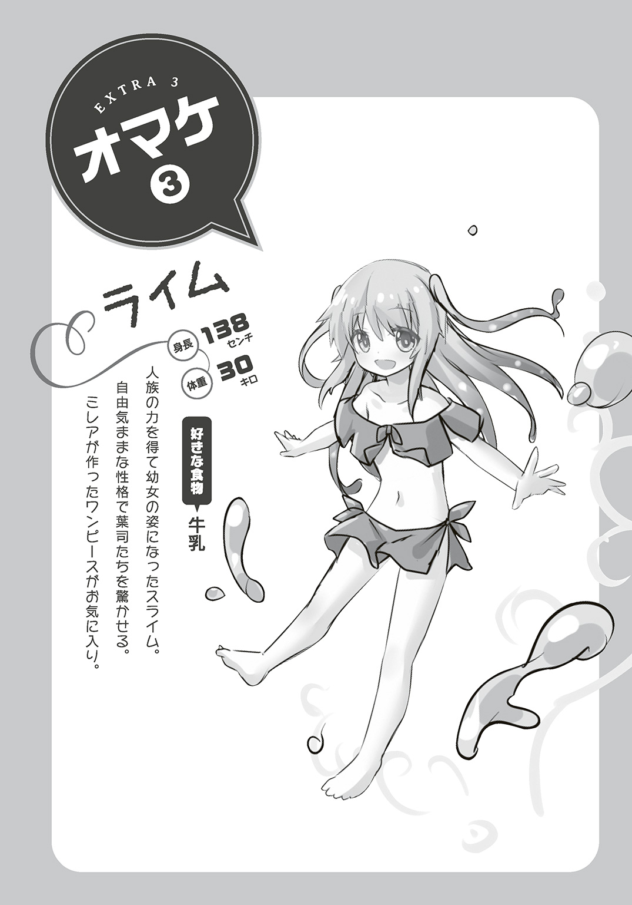
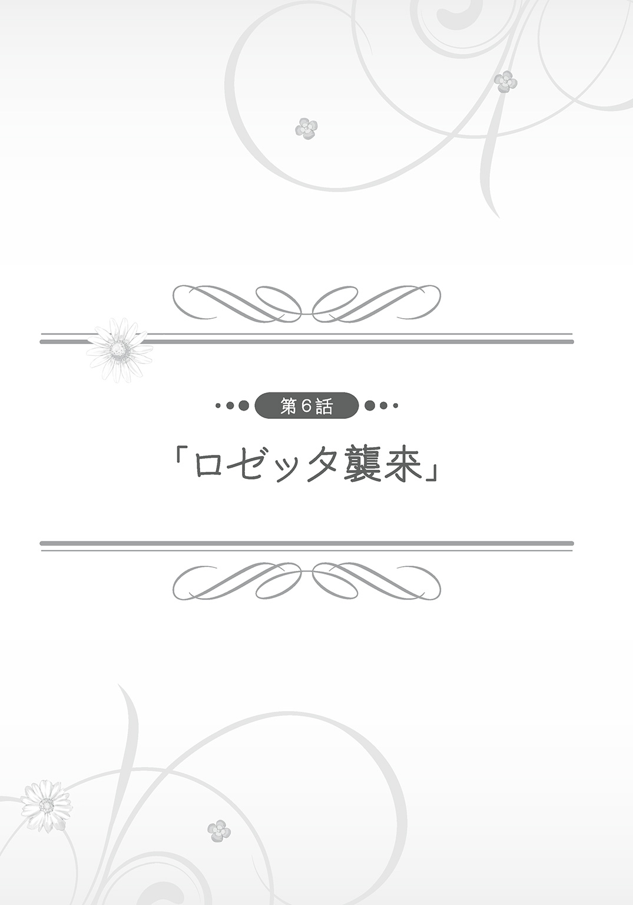
「アジトの防衛を強化する必要があると思います」
翌日。
一緒に朝食をとっていると、リアが言った。
「アジトの防衛？」
「はい。現在、アジトの見張りは私とライムが行っていますが、私たちだけで全てをカバーすることはできません。昨日のように賊の侵入を許してしまうと主さまに危険が及んでしまいますから」
「............」
リアの言うことにも一理ある。
昨日はなんとかなったが、これから更に強い敵が攻めてきたら手に負えなくなるかもしれない。
アジトの防衛強化は早めに行っておいた方が良さそうだ。
「魔物を捕まえて髪の毛でも与えてみるか？」
「......それは危険すぎます。聖遺物を与えたからといってその魔物が言うことを聞いてくれるとは限りませんから」
「それもそうか」
全ての魔物がライムのように言うことを聞いてくれるとは限らない。
危険から逃れるために危険を冒していては本末転倒である。
「そこで提案なのですが、アジトの中にトラップを設置してみてはどうでしょうか？」
「なるほど。その手があったか」
トラップを設置すれば仲間を増やさずにアジトの防衛力を強化することができる。
種類によるが、検討してみる価値はあるだろう。
「それではさっそく試してみます。地盤変動！」
リアが呪文を唱えたその直後。
洞窟の中の地面が抉られていきポッカリと穴が出現する。
「落とし穴か」
中を覗きこんでみると、穴の深さは一メートルほどあった。
派手に魔法を使った割には、規模が小さい気がするな。
「......もっと深くは掘れないのかな？ 流石にこれだと殺傷能力が低すぎる」
「申し訳ございません。先程から試しているのですが......どうやらここから先の地盤が恐ろしく固いようです」
「そうなのか？」
「......妙ですね。たしかに私は土属性の魔法が不得意ではありますけど、こんなことは初めてです」
どんだけ地盤が固いんだろう。
聖遺物の力でパワーアップしたリアの魔法が通じないとは相当だな。
しかし、困ったことになった。
この程度の落とし穴ではアジトの防衛能力が上がるとは思えない。
「提案なのですが、落とし穴の中に毒物を仕込むのはどうでしょうか？ これならば規模は小さくても殺傷能力は充分です」
「......う～ん。悪いんだけど、やっぱり落とし穴は止めにしよう。寝惚けてハマってしまいそうで怖いからな」
「そうですか......」
だからその......世界が終わったかのような絶望顔は止めろって！
見ているだけで心が痛くなるんだよ！
俺の一挙一動で感情をコロコロと変えてくれるリアは、可愛らしくもあるわけだが。
「キュー！」
「ん？ ライムも何か手伝いたいのか？」
スライムの言葉は分からないが、何を言おうとしているかは仕草で察することができる。
どうやらライムにも何か考えがあるみたいだった。
「キュー！ キュー！」
そこでライムは自らの腕の部分だけを、スライムの体に戻していく。
「おー」
美少女の体からスライムモードに戻れることは知っていたけど、部分的な変形もできるんだな。
なかなか器用なやつである。
ライムはそのまま「ふー」と息を吐き、自分の体の一部を地面に零していく。
異変が起きたのは、その直後であった。
な、なんだこれは......!?
ライムの体液は、地面の上でウネウネと動きながらも徐々に体を大きくしていく。
「これは......スライムの細胞分裂でしょうか......!? 私も実際に見るのは初めてです」
それから数分後。
ライムの腕だったものは、新しいスライムとして命を宿すことになる。
「「「「キュー！ キュー！」」」」
最終的に現れたのは合計四体のスライムであった。
「なるほど。こいつらを使って防衛力を強化しようってことか？」
「キュー！」
どうやら俺の推理は当たっていたらしい。
これは助かるな。
たしかに仲間となるスライムが増えれば、それだけアジトの防衛を強化できるというものだろう。
「しかし、どうしていきなり分裂できるようになったんだろう」
「僭越ながらも回答します。スライムというモンスターは体内の魔力が一定値まで溜まると、分裂をして繁殖を行うことが可能になると聞いたことがあります。主さまが聖遺物を与えたことによって条件を満たしたのでしょう」
「ふむふむ。つまりこいつらは、俺とライムの子供っていうわけか......」
まさか童貞のまま子供が出来るとは思わなかった。
人間パワー恐るべしである。
「子供......！ 私より先にライムが主さまと子供を......」
俺の言葉を受けたリアは、どういうわけか両膝を地面につけてショックを受けているようであった。
～～～～～～～～～～
「ヨウジさま！ ヨウジさまはいるだろうか！」
時間が過ぎて昼になった。
のんびりとベッドの上で横になっていると、アジトの中に聞き覚えのある声が鳴り響く。
「おや。この声は......？」
「昨日の熊人族の男のようですね。名前はたしか......アダイと名乗っていたでしょうか」
アダイには妹が病気を患っているということで昨日、髪の毛を渡したばかりである。
「ヨウジさま！ 良かった！ やはりここにいたか！」
入口の方に歩いていくと、大きな袋を持ちながらも満面の笑みを浮かべるアダイがいた。
「妹さんの病気は良くなったんですか？」
「ああ。そのことなんだけどな！ ヨウジさまの髪の毛を与えたところ......噓みたいに元気になったよ！ ヨウジさまには本当に感謝している......！」
満面の笑みを浮かべながらもアダイは言う。
「これは妹の病気を治してくれた礼だ。受け取ってくれ」
アダイが持っていた袋の中を開ける。
そこには実に様々な物資が詰められていた。
ほうほう。
これはなかなか良いものだな。
ハチミツ、塩などの調味料をはじめとして、トマト・豆などの野菜類も充実している。
やるなアダイ！
気を利かせて、森の狩りでは手に入れることができないものをチョイスしてくれたのだろう。
「助かるよ。ありがとうな」
「ヨウジさまにそう言って頂けるとは光栄だよ。それで......ものは相談なんだが、この前の聖遺物を追加で頂くことはできないだろうか？」
「......というと？」
「ウグッ......。話せば長くなるのだが、ウチの村は今、未曾有の危機に瀕しているんだ。それというのも月に一度、ウチの村にやってくる商人から購入する魔石代が高騰していてね。野郎......！ 俺たちが他に購入手段がないと分かった途端、値段を吊り上げてきやがったんだ......！」
そういう事情があったのか。
俺もよく知らないんだけど、この世界の魔石は人々の生活に欠かせない必需品になっているらしい。
いきなり値段を吊り上げられたら生活が苦しくなるのも当然だろう。
「しかし、聞いたところによると聖遺物っていうのは魔石の代用品になるらしいんだよ！ つまり......ヨウジさまの協力があればバカ高い魔石を買う必要がなくなるんだ！」
大まかにだが、話が呑み込めてきた。
要約すると、村の窮地を救うには聖遺物の力が必要というわけか。
「獣人よッ！ その方を誰と心得ますか！ 厚かましいにも程がありますよ!?」
「......リア。抑えて抑えて」
アダイの発言にブチキレそうになっていたリアを間一髪のところで制止する。
こういうことになるとリアは、感情の制御が利かなくなるのが怖い。
「なあ、リア。昨日は必死だったから押し通したけど......、これ以上アダイに聖遺物を渡して大丈夫なのか？ ほら。俺たちの情報が漏れるんじゃないかって懸念していただろ？」
「それについては問題ありません。アダイの住んでいる村の情報統制作業は既に完了しています。必要とあれば好きなだけ聖遺物を与えて下さって結構です」
流石はリア！
いつものことながら仕事が早い。
詳しいことは分からないけどリアが大丈夫というのなら大丈夫だろう。
「よし。それじゃあ今回も受け取ってくれよ」
「これは......！ 相変わらずにスゲー魔力だぜ！ 触れているだけで魔力がギッシリ詰まっているのが分かる！」
俺から髪の毛を受け取ったアダイは何時にも増して感激しているようであった。
「また髪の毛が必要になったら言ってくれよ。食料との交換なら何時でも受け付けるからさ」
「......本当か!? そ、そいつは助かる！」
何と言ってもこちらが差し出すのは原価ゼロ円の品である。
髪の毛一本で必要な物資が手に入るなら安い買い物と言えるだろう。
「グッ。主さまの髪の毛......羨ましすぎます！ 私でも頂いたことがないのに......！」
俺たちのやり取りを見ていたリアは、どういうわけか悔しそうな表情を浮かべるのであった。
～～～～～～～～～～
一方、時刻は翌日の朝にまで進むことになる。
葉司たちの住んでいる森の中に一人の少女が足を踏み入れていた。
（なんでしょう。この森は......？）
彼女の名前はロゼッタ。
王国の騎士団に所属する若きニューマンである。
ニューマンとは、アーテルフィアの中でも最も高い繁殖力を誇る種族である。
魔力と身体能力は平均的であるが、その外見は葉司たち人族と見分けがつかないことで知られていた。
「どう考えてもこの森は異常ですわ......！ ここで一体何が起こっているというのでしょう......」
王都から西方に三〇キロメートルほど離れた場所にある《オストラの森》は、駆け出しの冒険者が狩場として使用するエリアであった。
森の中にはスライム・ゴブリンなどの低級モンスターが多く存在しているはずなのだが――。
どれだけ探索してもロゼッタが魔物に遭遇することはなかった。
「とても......とても嫌な予感がします......」
ロゼッタは過去に一度だけ同じような経験をしたことがあった。
それは駆け出しの冒険者たちが使用するエリアに、フェンリルという強力なモンスターが住み着いた時のことである。
低級モンスターの中には、圧倒的な強者が近くにいると萎縮して巣穴から出てこなくなるものもいる。
しかし、これほどまでに広範囲に渡って魔物の出現を抑えるモンスターとは何者なのだろうか？
想像するだけでロゼッタの額からはジワリと汗が滲み出る。
「あれは......！」
そこでロゼッタが発見したのは岩場に造られた洞窟であった。
オストラの森はリアが探索していた遺跡から五キロも離れていない地点に存在している。
もしリアが怪我をして街に帰れない状況にあるのだとしたら――。
この辺りの洞窟で体を休めている可能性は充分にあるだろう。
先輩騎士の無事を祈りながらも、ロゼッタが洞窟の中に足を踏み入れようとした直後であった。
「............ッ！」
天井の上に張り付いていた一匹のモンスターがロゼッタ目掛けて強襲する。
「これは......なんという桁外れの魔力量......!?」
そのモンスターの正体が何の変哲もない唯のスライムだと知ったときロゼッタは、更に驚愕することになる。
「信じられませんわ。これはもうスライムのレベルを超越しています......!?」
「キュー？」
ロゼッタの前にいるスライムは先日ライムから生まれた子供の一匹である。
奥には更に強力なスライムが潜んでいることを彼女は知らないでいた。
「烈風刃！」
ロゼッタは得意の風魔法を使って目の前の敵を倒そうとする。
――が、意外なことにスライムの動きは速かった。
その攻撃は虚しくも空を切ることになる。
「しまっ」
ロゼッタの敗因は、異常な魔力を内包したスライムに気を取られて周囲の確認を怠ったことにあった。
ライムの子供たちがロゼッタの背後から強襲する。
「きゃあああああああああああああああああああああ！」
残る三匹の子供スライムに強襲されたロゼッタは、たまらずに悲鳴を上げるのであった。
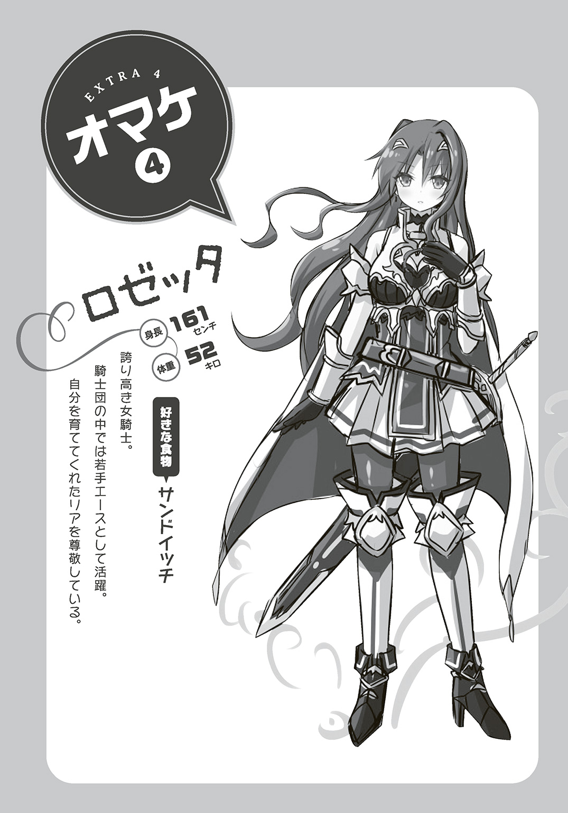
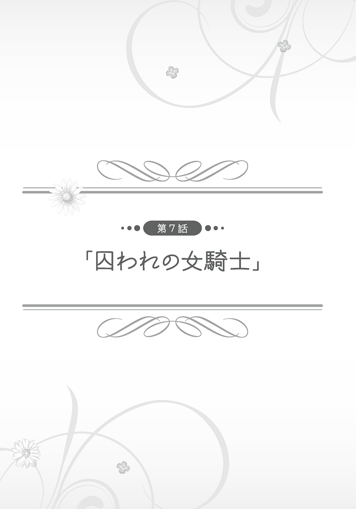
その日の朝。
俺は女性の悲鳴で目を覚ますことになる。
えーっと......どうしてこうなったっ!?
声のした方に向かってみると、そこにいたのは紅色の髪を持った見知らぬ美少女であった。
「無礼者！ 何を見ているのです!?」
おそらくスライムたちに『侵入者は見つけ次第、無力化すること』と命令していたことが関係しているんだろうな。
スライムたちに揉みくちゃにされた紅髪の少女は、あられもない姿になっていた。
「こ、この痴れ者がっ！ 早く！ 早くわたくしのことを助けなさい！」
強がってはいるが、羞恥心で狼狽しているのがバレバレである。
衣服は奪われ、下着姿になった少女は、歯ぎしりをしながら恥辱に耐えているようであった。
「......ロゼ。何をしているのです」
「お姉さま!? 良かった......やはり生きていたのですね！」
もしかして二人は知り合いだったのだろうか？
ロゼッタはリアの姿を目の当たりにし、涙を溜めながらも感動の笑みを浮かべていた。
「主さま。紹介します。彼女の名前はロゼッタ。年齢は近いですが、王都の騎士団には私より二年ほど後に入隊しています」
「そうか。つまりはリアの後輩だったのか」
「お姉さま！ 今すぐに王都に戻りましょう！ お姉さまの力が必要なんです！」
紅髪の少女は縋るような眼差しでリアに言う。
「何者かに月が破壊されてからというもの王都は大変なことになっています！ この混乱を鎮めるためにはお姉さまの協力が......」
「......愚問ですね。私は人族のヨウジさまに忠誠を誓った身。王都に戻ることなどありえません」
「人族？ お姉さまは、このニューマンが人族と仰いますの？」
「その通りです。ヨウジさまはこの世界で唯一の人族。遺跡探索の折に私は、この方に命を救って頂いたのです」
「...............」
リアの説明を聞いたロゼッタは訝しげな表情を浮かべる。
「なあ。リア。ニューマンって何だ？」
「ニューマンというのは人族の血を色濃く引き継いだ種族になります。その能力は平均的ですが、外見的には人族とほとんど変わりがありません」
なるほど。
つまり初対面だと俺の外見は、そのニューマンという種族に見えちまうってわけか。
正体を隠したい俺にとっては何かと都合が良さそうな存在である。
「お姉さまはこの男に騙されています！ その男が本当に人族であるのならば......体の外に漏れ出した魔力で感知できるはずですわ！」
「貴女には分からないでしょう。主さまの魔力は、常人に観測できるものではありません。膨大な魔力がオーバーフローを起こしているのです」
「そ、そこまで仰るのでしたら証拠を見せて欲しいものですわ！ わたくしが納得するような証拠を見せて頂けませんこと？」
「............」
ロゼッタが疑うのも無理はない。
俺だって自分がどうしてこんなところにいるのか、理由を上手く説明できないわけだしな。
「......主さま。申し訳ありませんが、彼女からの信頼を得るために聖遺物の力を見せては頂けませんか？」
「分かった。いつものように髪の毛を与えればいいのか？」
「......流石にそれはやり過ぎだと思います。主さまの髪の毛は一本とは言っても桁外れの魔力を有していますから。差支えなければ、彼女の口の中に指を入れて頂けないでしょうか？」
「......え。でも、そんなことをしたら怒られないか？」
「問題ありません。彼女は昔から私のことを慕ってくれているようですから。それが私の意志であれば責めるような真似はしないかと思います」
「分かった。そういうことならやってみるよ」
か、勘違いしないでよねっ!?
これは別にエロい意味ではないんだからねっ！
囚われの女騎士の口の中に指を突っ込むだけであって......変な意味はない。変な意味はないのである。
「ふんっ......！ 近くで見ると益々凡庸な男ですわ！ お姉さまもこんな男のどこに惹かれたのだか......」
俺の姿を近くで見たロゼッタは悪態をつく。
やはりというかなんというか......。
改めてみると、ロゼッタは格別な美少女であった。
少し気の強そうな顔立ちは好みが分かれるところだろうが、可愛いらしいピンク色の下着をつけているのもギャップ萌えの様相を呈している。
胸はでかい。
おそらく優にＧカップを超えるくらいはあると思う。
そんな少女が下着姿でスライムに捕まっている状態は、破廉恥極まりないものがあった。
「それじゃあ、今から証拠を見せてやるよ」
俺はそう前置きすると、スライムたちに拘束されているロゼッタの口の中に指を突っ込むことにした。
「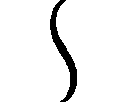ッ!?」
生暖かい。
湿り気を帯びた人肌の温度がジンワリと指先に伝ってくる。
口の中に指を突っ込まれることになったロゼッタは、目を丸くして驚いているようであった。
「ふにゃっ！ な、なんでしゅのこれは!?」
結論から言うと、ロゼッタが抵抗を見せたのは一瞬であった。
暫くすると、ロゼッタは自ら進んで指の汗を舐めることになる。
「んっ......。ちゅっ......ちゅっ......」
やはり人族の体液には媚薬のような効果があるのだろう。
ロゼッタは『心ここにあらず』と言った雰囲気で俺の指をしゃぶっていた。
一心不乱に指をしゃぶるロゼッタの姿は官能的で、見ていると下半身の辺りがムズムズと痒くなってくる。
「主さま。そのあたりで大丈夫でしょう」
「............」
これはまずい！
俺の下心に気付いたのだろうか？
リアの口調には少しばかり棘があるような気がした。
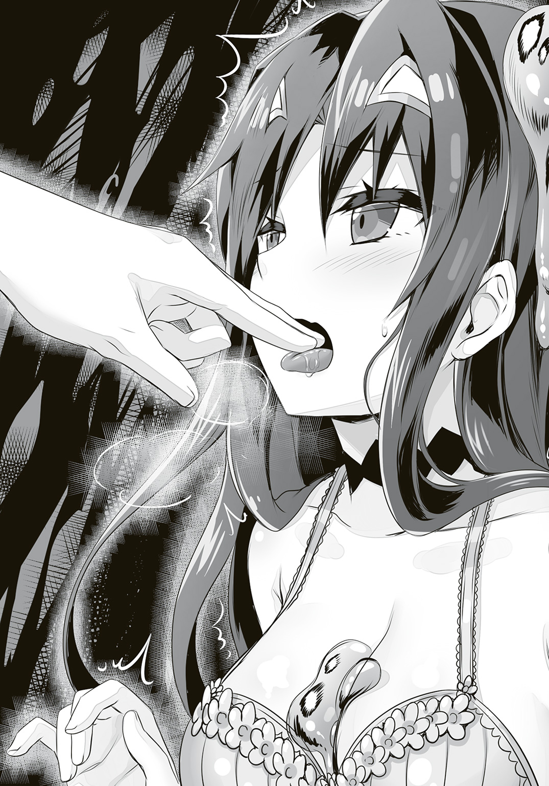
「ハッ......！ わたくしとしたことが......一体何を......!?」
口から指を抜いてやると、我に返ってくれたようである。
まだ味わい足りないのか、ロゼッタは俺の指を名残惜しそうに見つめるのであった。
～～～～～～～～～～
それから。
アジトに戻った俺たちはロゼッタに対して今日までの経緯を説明することにした。
「......たしかに貴方の指からは得体の知れない......無尽蔵の魔力を感じました。こうなってしまっては信じるより他はありません」
先ほどの交渉が上手くいったからだろう。
俺が別世界から召喚された人族だということは、割と簡単に信じてもらうことができた。
「それでロゼ。貴女はこれからどうするのですか？」
「わたくしの忠義は国にあらず。わたくしの忠義は、常にお姉さまと共にございます。当然、お姉さまたちに協力させて頂きますわ！」
一片の迷いも見られない清々しい表情でロゼッタは言った。
「ロゼはそれでいいのか？ 国を裏切ることになるんだろ？」
「無礼者！ わたくしのことを愛称で呼んでよいのは世界でただ一人！ お姉さまだけです！ 私の名前はロゼッタ！ 気安くロゼなどと呼ばないで下さいまし！」
「そ、そうか。悪かったよ」
ロゼッタのリアに対する感情は、尊敬を通り越して崇拝に近いものがある。
この様子だと彼女はリアのためなら国を裏切ることも厭わないだろう。
「けど、良かった。ロゼッタが仲間になってくれるなら、これでまたアジトの防衛が強化されるな」
「......いえ。主さま。ロゼにはアジトの防衛ではなく、別の役割を与えようと考えています」
「どういうことだ？」
「我々に最も足りていないものは情報と物資です。彼女には当面の間、王都に潜伏をしてもらうのが最善でしょう」
「なるほど。つまりロゼッタにはスパイになってもらおうってわけか」
たしかにそちらの方が何かと都合が良さそうである。
アジトの防衛ならライムのようなモンスターでも務まるが、スパイの仕事となるとそうもいかない。
「承知いたしました。それではこのロゼッタ、お姉さまのために誠心誠意、身を粉にして働く所存です」
「頼みましたよ。特にデクスの動向が分かりましたら直ぐにこちらに知らせてください。聖遺物の力を手にしたらあの男は......何をするか分かりませんから」
「............」
やはり現時点での俺たちにとっての最大の脅威は、最初の遺跡の中にいた猫耳のオッサンだろう。
なにせあのオッサンは、俺の正体を知っている上に、聖遺物の力を取り込んでパワーアップしているわけだからな。
「最後にロゼ。貴女に一つだけ忠告しておきます」
一通り作戦会議が終わると、リアは改まって切り出した。
「......主さまに対する口の利き方には気をつけなさい。さもなければ私が貴女を殺してしまうかもしれませんよ」
こええええええええっ！
きっとリアは騎士団の中では、スゲー厳しい先輩だったんだろうな。
そのゴミを見るかのような冷たい表情は、普段「主さま！」と言って慕ってくれる彼女からは想像がつかないものであった。
「ああ。なんと凜々しい殺気！ 流石はお姉さまです！」
自ら殺気を向けられているにもかかわらず――。
どういうわけかロゼッタはキラキラとした尊敬の眼差しを向けていた。
おいおい。
お前はそれでいいのかよ！
よくよく考えてみるとリアにも少し変わったところがあるし......王都の騎士団っていうのは割と変人揃いなのかもしれないな。
「リア。俺は気にしていないから。変にロゼッタの口調を矯正しないでいいから」
「そうですか。主さまがそう仰るのでしたら良いのですが......」
リアのように敬った言葉遣いも嬉しいが、流石にそればかりだと気疲れしてしまう。
そもそもロゼッタの砕けた口調は俺にとっては嬉しいものなので、直してもらう必要もないだろう。
～～～～～～～～～～
一方、その頃。
ところ変わってここは、ロゼッタの所属する騎士団が置かれている王都《ミズガルド》である。
「畜生！ どうして俺様がこんな目にっ！」
王都の下水の中に悪態をつくデクスがいた。
デクスの体はガリガリにやせ細り、目のしたには大きなクマができていた。
ストレスで体中を搔き毟った結果、傷痕は化膿を起こして腫れあがり、見るも無残な惨状となっている。
「クソッ！ 聖遺物だ......！ もっと聖遺物があれば......！」
強力な魔力を秘めた聖遺物であるが、その鮮度が落ちて品質が低下すると、悪質な中毒を発症することで知られていた。
「無様ですね......！ 騎士団では、『剣聖』とも呼ばれた方が不甲斐ない」
下水道の中に薄気味悪い声が鳴り響く。
「......何者だっ!?」
デクスが振り返ると、そこにいたのは不気味な仮面を身に着けた一人の男の姿であった。
「私の名前はグレイス。しがない魔族ですよ」
アーテルフィアにおいて魔族とは謎に満ちた存在であった。
彼らは他種族たちと常に一定の距離をとり、表に出ようとしない。
ただ一つハッキリ分かっていることは、魔族が他種族に対して友好的な感情を抱いていないということだけである。
「へへっ。魔族の追手が来るとは......とうとう俺も焼きが回ったということか」
驚きこそしたが、納得の感情が先にきた。
魔族たちは表舞台にこそ現れないが、人目に付かない裏社会で勢力を伸ばしていた。
人族の禁忌の力に手を出した自分は魔族に処分される運命にあるのだろう。
そう考えたデクスは腰から剣を抜いて最後の抵抗を見せようとする。
「まぁまぁ、武器は仕舞って下さいな。あくまで私は平和な取引をしにきたのですから」
男の声音には不思議と荒んだデクスの心を落ち着かせるものがあった。
「まずはこれをご覧下さい。きっと貴方も気に入ると思いますよ」
「それは......？」
仮面の男が懐から取り出したのは、ガラスビンの中に入れられた錠剤であった。
「聖遺物だと......!? 一体どうして......!?」
デクスは自らの眼を疑った。
何故ならば――。
ビンの中に入った錠剤には、聖遺物と同じ性質の魔力が秘められているように見えたからである。
欲しい。
一秒でも早く、あのビンの中の薬を手に入れたい。
「我々魔族は長年、人族を研究していましてね。聖遺物と同じ効果を持った薬を開発する技術力を有しているのですよ」
「............」
仮面の男の説明はデクスの耳を虚しく通り過ぎる。
「アメザキ・ヨウジという男を殺しなさい。そうすれば我々は貴方にビンの中のものを提供しましょう」
「何でもいい！ 何でもいいからっ！ その聖遺物を俺様に寄越しやがれっ！ 詳しい話はそれからだっ！」
男の出した条件をロクに聞こうともせず、デクスは一方的に喚き散らす。
聖遺物の闇に取りつかれた彼の中には、もはや一片の理性すら残っていない。
デクスの眼前には、底知れない闇が広がっていた。
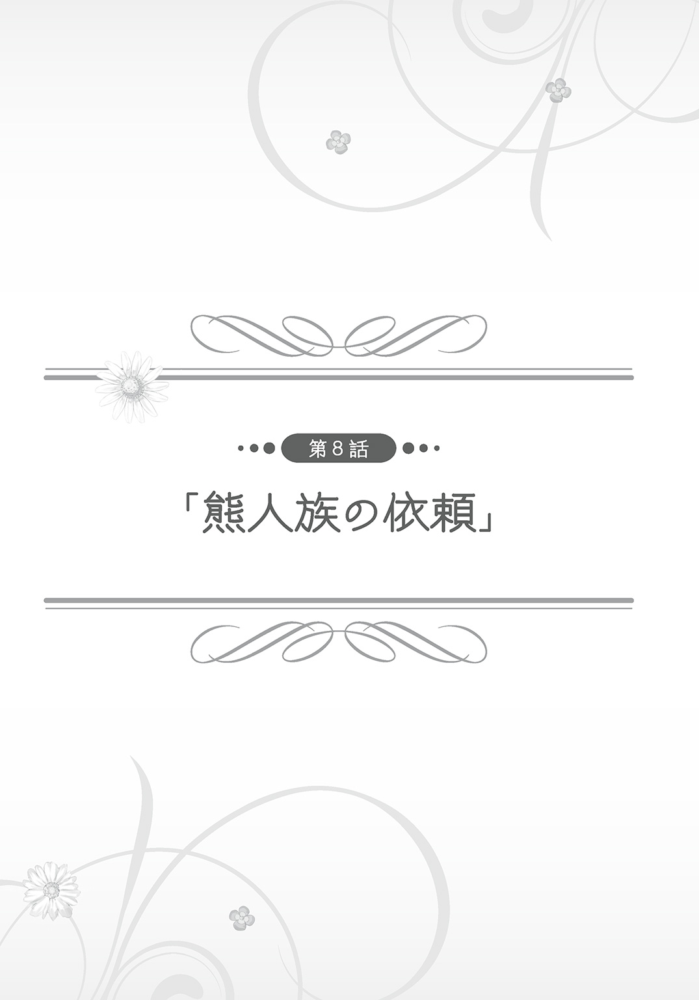
「......おはよう。リア」
何時もと変わらない平和な朝がやってきた。
目を覚ますと、俺の視界に入ってきたのはエルフ族の美少女であった。
「おはようございます。主さま」
スライムたちが増殖したおかげで見張りの仕事が減っているからだろう。
俺の勧めもあってリアは同じベッドで眠ることが多くなっていた。
「それでは主さま。せっかくで悪いのですが......」
そこでリアは恥ずかしそうにモジモジと指を絡ませる。
寸前のところで理性を保っているが、もう我慢できないといった様子である。
「ああ。大丈夫だよ」
「......それでは失礼します」
許可を与えると、リアは遠慮がちに俺の唇を求めてくる。
「んちゅっ......ちゅっ......」
だがしかし。
恥じらいがあるのは最初の方だけで一度キスが始まるとリアは獣に変わる。
俺には想像ができないんだけど人族の体液は、リアたちエルフ族にとっては凄く病みつきになってしまう味らしい。
体力の限界もあって今は二分という時間制限を設けているが、放っておくと一日中でも唇を求められてしまいそうである。
「リア......そろそろ......」
「あっ......」
キスを中断すると、リアは名残惜しそうに俺の唇を見つめる。
おいおい。
そんな顔をしないでくれよ。
リアが気絶して動けなくなったら困るのは俺である。
「キュー！ キュー！」
「よしよし。ライムも構って欲しいんだな」
青髪の幼女の姿をしたライムには、リアが作った即席の衣服を着せてある。
本当は街に行って服を選んでやることが出来れば良かったんだけどな。
即席というだけあって、ライムの格好は露出が多く目のやり場に困るものがあった。
「リア。それじゃあライムと一緒に散歩に行ってくるわ」
「行ってらっしゃいませ。主さま」
リアに許可を求めると、俺は何時ものようにライムを連れて森の中で散歩を始める。
以上。
ここまでの行動が、異世界に召喚されてからの俺の日課である。
ブラック企業に勤めて心身を壊しかけていた頃のことを思うと、自分のことながら充実した日々を送っていると思う。
～～～～～～～～～～
「ヨウジさま！ ヨウジさまはいるだろうか！」
昼になると、アジトの中に聞き覚えのある声が響く。
入口の方まで足を伸ばすと、そこにいたのは熊人族のアダイであった。
「どうした？ また髪の毛が欲しくなったのか？」
「違う！ たしかにヨウジさまの髪の毛は幾らでも欲しいが......そうじゃないんだ！」
色々あって熊人族のアダイとは、取引相手として良好な関係を築いている。
「実を言うと......今日はヨウジさまに相談したいことがあって来たんだ」
「相談？」
「ヨウジさまの聖遺物を与えてから、妹の病気が治ったっていう話は以前にしただろう？」
今でこそ対等な取引相手としての関係を続けているが、元はというとアダイに聖遺物を渡したのは妹を助けるためであった。
「病気が治ってからというもの妹の様子がおかしいんだ。どうにもソワソワしているというか......上の空というか......以前に比べて落ち着きがないんだよ」
「それは気になりますね」
俺たちの会話に割り込んできたのはリアであった。
「聖遺物の中には、摂取することで中毒症状を起こすものが存在すると聞いたことがあります。もしかしたら妹さんは危険な状態にあるかもしれません」
「その中毒症状っていうのを放っておくとどうなるんだ？」
「定期的に聖遺物を摂取できなければストレスで体を搔き毟って......最終的には死に至ります」
「............!?」
それを早く言ってくれよ！
聖遺物って万能アイテムだと思っていたんだけど......そんな危険なものだったのかよ!?
......。
............。
いやいや。
落ち着いて考えてみろ。
もし俺の聖遺物にそんな危険な症状があるならリアの体調も悪くなるはずだよな？
となると単純にアダイの思い過ごしという可能性もあるんじゃないかな。
「し、死......!? なんてこった！ どうして俺の妹が......うわあああああああああああああああああああ！」
リアの言葉を聞いたアダイは、凄まじい勢いで取り乱しているようであった。
流石はシスコン！
妹の病気を治すために犯罪に手を染めちまうだけのことはある。
「落ち着いて。まずは様子を確認するのが先じゃないか？ 慌てるのはそれからでも遅くないぞ」
「そ、そうであったな。流石はヨウジさまだ。頼りになる」
このシスコンは妹のことになると見境がなくなるから本当に困る。
それはそれとして......。
俺の体にそんな危険な成分が含まれているのならば、このまま見過ごすわけにはいかないよな。
そう考えた俺は、アダイに案内してもらい熊人族の村に向かうことにした。
～～～～～～～～～～
アダイたちの村は、俺たちのアジトから徒歩で一時間ほどの距離に存在していた。
「ここが熊人族の村か」
それほどアジトと離れているわけでもない森の中にこんなに立派な村があるとは予想外であった。
「住人は俺を含めて一〇〇人くらいの小さな村だがな。狩猟と農業を中心として細々とやっているよ」
何にせよ俺にとっては、異世界に召喚されてから初めて訪れる村である。
文明のレベルとしては元の世界で言うところの中世ヨーロッパくらいだろうか？
赤レンガで造られた家が立ち並んだ情緒の溢れる雰囲気であった。
「それにしても賑やかな村だなぁ」
村の中は活気に満ちていた。
素人目に見ても畑の作物は豊かに育っていることが分かり、住人たちの表情には笑顔が溢れていた。
「これも全てヨウジさまのおかげだよ」
「......俺のおかげ？」
「ああ。ヨウジさまから頂いた髪の毛を畑の肥料として活用してみたところ......これが大当たりでね。村の特産品であるリンゴやトマトなんかの味も良くなっているので、今では王都の名のある料理店から注文が殺到しているんだよ！」
「...............」
俺の髪の毛ＳＵＧＥＥＥ！
何気なく取引をしていたのだが......まさか髪の毛で村おこしをしているとは思わなかった。
～～～～～～～～～～
「着いたぞ。あれが俺の住んでいる家だ」
アダイの指さす方向にあったのは、村の中でも飛びぬけて立派な家であった。
「なんか他の家に比べるとやけに豪華な気がするけど？」
「ああ。こう見えて俺はこの村の村長をやっているからな」
「マジで......!?」
というかこの男は、村長のくせに強盗紛いの行為をしていたのか。
何よりそこにビックリだよ。
「遅いぞ兄貴！ 今までどこに行っていたんだよ!?」
家に入った俺たちを出迎えたのは、頭からぴょこんと熊耳を生やした美少女であった。
リアと比べると背は低い。
一五〇センチを少し上回るくらいだが、垢抜けていて大人びた雰囲気を持っている。
全体的には......熊耳ギャルという表現がしっくりくる美少女であった。
顔立ちは整っているが、少し化粧が濃いのが好みの分かれるところだろう。
「紹介が遅れたな。こいつが俺の妹のミレアだ。どうだい？ なかなかの美人だろう？」
俺の方に視線を向けながらもアダイは照れくさそうに頭を搔いていた。
「ああ。素直にビックリしたよ」
兄妹なのにここまで似ないことってあるんだな。
こんな美人の妹がいたらアダイがシスコンになってしまうのも共感できる。
「なぁ。兄貴。アタシ、言わなかったか？ 勝手に知らない男を家に上げるなって」
どうやらミレアちゃんはあまり俺のことを歓迎していないみたいである。
男に対する嫌悪感を剝き出しにしているようであった。
「で、そこにいる奴らはどこの誰なんだ？」
「ミレア。この方がお前の命の恩人のヨウジさまだ」
「っ！」
アダイの言葉を受けたミレアちゃんは急激に頰を赤くしていく。
「ごめんなさい！ アタシったらなんて格好を......！ すいません！ 一分だけそこで待っていて下さい」
取り乱したミレアちゃんはドタドタと階段を駆け上がり二階に戻っていく。
それからピッタリ一分後。
俺たちの前に現れたのは、やたらと気合の入ったワンピースに着替えたミレアちゃんの姿であった。
「おいおい。たしかそれ......いつか恋人が出来た時に着るってタンスの奥に仕舞っていたやつじゃないか？」
「......や、やだなぁ。兄貴。寝惚けたこと言わないの！ こっちがアタシの普段着でしょう？」
いやいや。
そんなパーティーに行く時に着るような服を普段着にするやつはいないだろう。
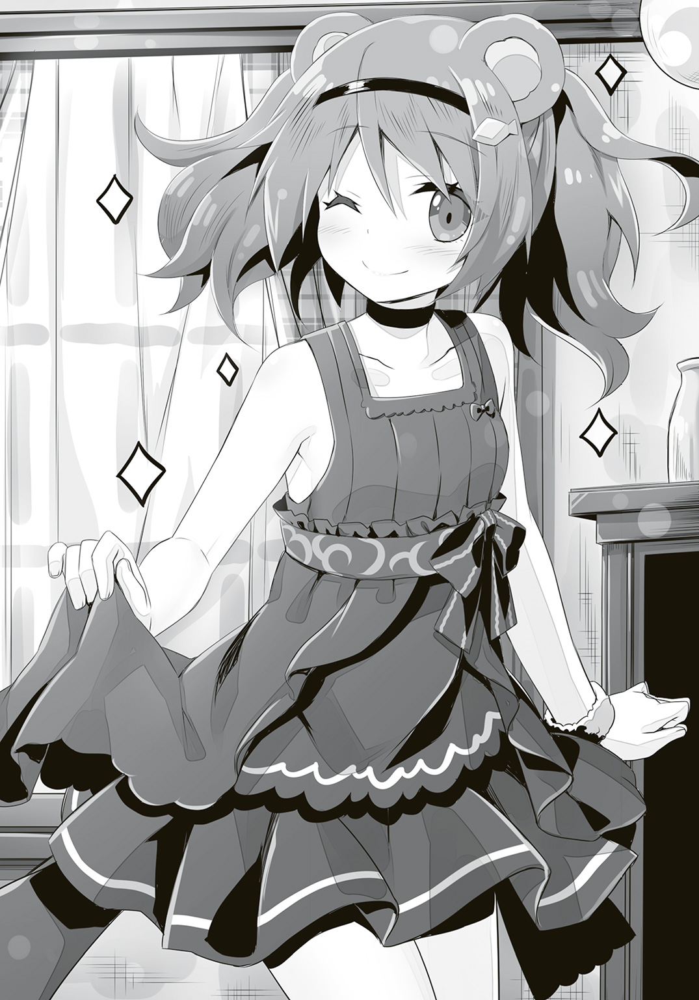
「ささ。ヨージさん。粗末な所ですが、自分の家だと思ってゆっくりくつろいで下さいね。アタシはこれから夕食の準備をして参りますので」
それだけ言い残すと、ミレアちゃんは俺から逃げるようにして家の奥に消えていく。
「たしかに様子がおかしい。なんとなくだけど......情緒が不安定な気がするな」
「だろ？ そうだろ？ クッ！ やはり聖遺物を与えたことが原因か......」
「............」
何故だろう？
俺たちの会話を聞いていたリアは、なんだか呆れた目線を送っているような気がした。
～～～～～～～～～～
その夜。
アダイの勧めにより、俺たちは熊人族の村に泊まっていくことになった。
「凄い！ これ全てミレアちゃんが作ったのか？」
「はい。命の恩人であるヨージさんのために腕によりをかけて作りました。たーんと召し上がって下さい」
テーブルの上に並べられているのは、鶏の丸焼き、トマトソースのパスタ、サラダ、玉葱のスープなどの贅を尽くした料理の数々である。
リアの料理もハイレベルだと思うが、今のアジトの設備で作れる料理の範囲はたかが知れている。
異世界に召喚されてからこれほどの料理を一度に食べるのは初めてだった。
「うん。凄く美味しいよ。ミレアちゃんは良いお嫁さんになると思うな」
「そ、そんな......。お嫁さんだなんて......」
夕食は美味しいが、気になるのはミレアちゃんの症状である。
俺が視線を送る度に、ミレアちゃんはキョロキョロと視線を逸らして挙動不審な感じになっていた。
聖遺物による中毒か？ と、訊かれるとピンと来ないが、とにかく様子がおかしいのはたしかみたいなんだよな。
「どうぞ！ 粗末な食事で申し訳ありませんがリアさんも召し上がって下さい」
「ありがとうございます」
リアに食事を勧めるミレアちゃんの態度は、なんだか妙に親しげなものがあった。
あれ。
そう言えば以前にリアは、聖遺物の情報が外部に漏れださないように情報統制をするって言っていたよな。
もしかしてその時に二人は知り合いになっていたのだろうか？
「なあ。アダイ。一つ訊きたいことがあるんだが」
「ああ。他ならないヨウジさまの頼みだ。何でも訊いてくれよ」
俺が尋ねるとアダイは分厚い胸を張って応じる。
この野郎......！
なかなか爽やかな笑顔を浮かべてくれるじゃないか。
本当にコイツは得な性格をしていると思うわ。
「前にリアが熊人族の村を訪れたことがあったと思うんだけど、そのときのことを教えて欲しい」
「............ッ!?」
俺の言葉を受けたアダイは咄嗟にスプーンを床に落とす。
「どうした？ 顔色が急に悪くなったみたいだが......」
「す、すまん。ヨウジさま。どうもオレは急に体調が悪くなってきたみたいだ。暫く部屋で横になっているから三人で食事を楽しんでくれ！」
「............」
それだけ宣言すると、アダイは逃げるようにして俺の元から離れていく。
いやいや。
本当に何があったんだよ!?
リアについて尋ねた時のアダイの取り乱し方は尋常でないものがあった。
これもリアの言っていた『情報統制』というやつの成果なのだろうか？
リアのやつ......どんな手を使って情報を制御しているんだろう。
どうやら俺は、触れてはいけない禁断の扉を開けようとしてしまったらしい。
～～～～～～～～～～
夕食の後は就寝の時間である。
俺は床に就く前にアダイに頼まれていた仕事を引き受けることにした。
「ミレアちゃん？ 入ってもいいかな？」
「ヨ、ヨージさん!?」
ノックをすると、部屋の中からミレアの上擦った声が聞こえてきた。
ここに来る前に俺は『部屋を訪れてミレアの変化の原因を調べて欲しい』とアダイから依頼されていたのであった。
「......どうぞ。入ってください」
「お邪魔します」
扉を開けると、ふんわりと甘い女の子の匂いが鼻腔をくすぐった。
おおおおお！
こ、ここが女の子の部屋ってやつなのか!?
考えてみると、これまでの人生の中で思春期の女の子の部屋に入ったことってなかったような気がする。
「それにしても凄い服の量だね......」
広さ一〇畳ほどのミレアちゃんの部屋には、所狭しとキラキラとした衣服が飾られていた。
そのどれもがハイセンスで、渋谷とか原宿を歩いている女子高生が着ていそうな代物であった。
「手作りなので......見られるのは恥ずかしいのですが」
「えっ。これをミレアちゃんが!?」
「はい。私の将来の夢は、王都でデザイナーとして就職することなんです。衣服に関する知識と情熱なら誰にも負けません！」
これは驚いた。
初対面からオシャレな女の子という印象はあったが、デザイナーを目指すほどだったとは予想外である。
というか異世界にもデザイナーっていう職業は存在したのか......。
「えへへ。こう見えてアタシの作った服は、王都のバザーでは直ぐに売り切れるほど人気なんですよ？」
自信を持って言うだけのことはある。
素人目に見てもミレアちゃんの作った服は、どれも店で売っているものと比べて遜色のないクオリティだと分かった。
「ヨージさん。知ってましたか？ この世界で使われている衣服のほとんどは、大昔に住んでいた人族が考えたものなんです」
「へぇ。そうだったのか」
言われてみると部屋の中にある衣服は、どれも地球では馴染み深いものばかりだった。
「これまでアタシはずっと......素敵な衣服を作った方々を尊敬していました。アタシにとって人族は神様なんです。だからアタシの病気を治してくれたのが人族の方って聞いたとき......運命を感じました」
ベッドの上に腰掛けながら語るミレアちゃんの眼差しはキラキラとしたものであった。
「......ヨージさん。好きです」
んっ。んんんっ？
この子......今なんて言った？
「貴方のことを考えると、胸がドキドキして自分が自分でないみたいです。こんなんだから兄貴から心配されているのも分かってはいるんですけどね」
そうか！
そういうことだったのか！
よくよく思い返してみると、幾つか伏線はあったような気がした。
ズバリ言おう。
ミレアちゃんの様子がおかしかったのは、恋をしていたからである！
悲しいかな。
生身の女の子から好きになってもらった経験がないから全く気付かなかったぜ！
「ミレアちゃん。悪いんだけど......」
「あ！ 別にアタシは何か見返りが欲しいわけではないのでご心配なく！ ヨージさんにはリアさんがいますしっ！ アタシなんかでは全く釣り合いが取れていないことは分かっていますから！」
「............」
そういうつもりで言ったわけではなかったんだけど。
どうやらミレアちゃんは俺とリアの関係についても色々と誤解をしているらしい。
「でも......ヨージさんが良いのなら、アタシは何時でも都合の良い女になる覚悟はできていますよ？」
ミレアちゃんはそう前置きすると、色っぽい仕草で服を脱ぎ始める。
「ちょっ！ ミレアちゃん!?」
慌ててツッコミを入れるが、ミレアちゃんは止まらない。
ミレアちゃんは、ゆっくりと身に着けていたワンピースを脱ぎ去った。
なるほど。
たしかに彼女が身に着けている下着のデザインは、日本のものと変わらないみたいである。
最初に女性用パンツにリボンを付けようって考えた奴は天才だと思うんだよね。
あの小さなリボンに何人の男が心を奪われたか分からない。
「ヨージさん。もし嫌でしたら拒否しても良いですからね？」
吐息が触れるくらい顔が近い。
そのままミレアちゃんはそっと俺の唇を奪う。
「んっ......！」
柔らかい。
ぷにぷにしたミレアちゃんの唇はどこか遠慮がちに求めてくる。
今のリアと比べると、まだまだミレアちゃんのキスはぎこちないものであった。
「はぁ......。んちゅっ......ちゅっ......」
人間の唾液の味に夢中になっているんだろうな。
最初はスローテンポだったミレアちゃんのキスは、次第に激しさを増していく。
「凄いです......！ これがヨージさんの力なのですね......!?」
聖遺物に含まれる催淫作用が発動したのだろう。
ミレアちゃんの顔は紅潮し、表情はだらしなく緩み始める。
「ヨージさんっ......。どうしましょう......？ なんだかアタシ......とてもエッチな気分にっ......！」
喋っている途中もミレアちゃんの舌は止まらない。
こうなってしまってはもう......自分の意志でキスを止めることすらできないのだろう。
時間にすると一分も経っていないと思うのだが......。
予想していた以上に早くに限界がきた。
「っ！」
ミレアちゃんはビクビクと体を痙攣させたかと思うと、バタリと床の上に倒れそうになってしまう。
「おっと」
間一髪のところだった。
俺は倒れそうになるミレアちゃんの体をなんとか支えることに成功する。
「......自分が不甲斐ないです。夜伽の相手すら務まらないなんて」
いやいや。
ミレアちゃんは頑張っていたと思うよ。
普通の女の子は一分くらいが限界なんだろうな。
今にして思えば一〇分もキスを続けられるリアが凄すぎたんだろう。
「落ち込まなくていいんだよ。ミレアちゃんは、ミレアちゃんに出来ることをしてくれたらいいから......」
「アタシに出来ること......ですか......？」
「そうだ。もしよかったら俺たちのために服を作ってくれないか？」
我ながら良いアイデアだと思う。
以前からライムには服を与えてやりたいと思っていたんだよな。
こちらとしても優秀なデザイナーであるミレアちゃんが協力者になってくれたら大助かりである。
「分かりました。そういうことであれば何なりと仕事を振って下さい。アタシの技術がヨージさんの役に立てるのであれば......こんなに嬉しいことはありませんからっ！」
うんうん。
良い笑顔になった！
たぶんだけどミレアちゃんは、今回の一件を通じて俺に恩返しをしたいと考えていたんだろう。
「ちなみにミレアちゃんの方から俺に何かして欲しいことってないかな？ 服を作ってもらう代わりにこっちからも何か見返りを用意したいなって」
無償のボランティアほど長続きしないものはない。
関係を継続させるためには、俺からミレアちゃんにも何かを与えるべきだろう。
つまりは俺がアダイから食料をもらって、髪の毛を渡しているのと同じような理屈である。
「ふふっ。そうですねぇ......」
俺の提案を受けたミレアちゃんは小悪魔チックな笑みを浮かべる。
「報酬は......ヨージさんとのキスで大丈夫です」
それだけ言うとミレアちゃんは素早く俺の唇を奪う。
ただし今度は、気絶をしないようにライトなやつである。
「分かった。それじゃあ、交渉成立ってことで」
キス一回でオーダーメイドの服が手に入るのであれば安すぎる買物だろう。
このような経緯を経て――。
俺は優秀なデザイナーの獲得に成功するのであった。
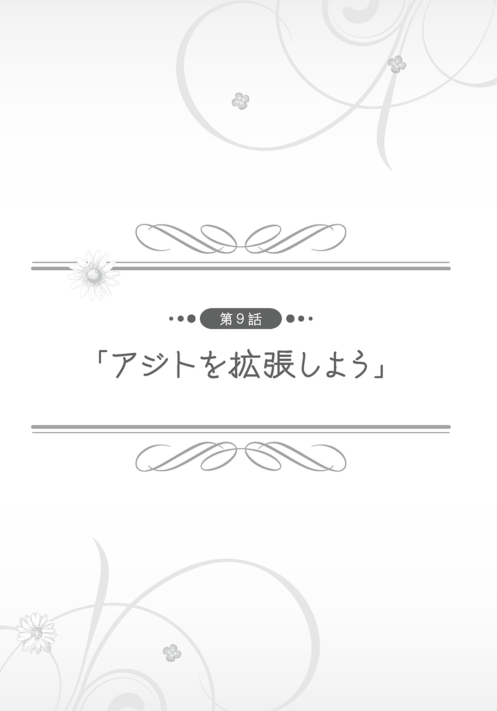
「リアー」
「如何しましたか」
「暇だなぁ」
「そうですねぇ」
「たまには日光浴っていうのも良いものだな」
「はい。お日様が気持ち良いですねぇ」
とある晴れた日の午後。
特にすることもないので俺とリアはアジトの入口で日光浴をしていた。
俺たちの味方をしてくれている女騎士、ロゼッタからの情報があるまでは迂闊に外に出ることはできない。
かといって一日中アジトの中にいても不健康である。
そういうわけで俺たちは、日光浴に勤しんでいた。
地面に寝転んだ俺が、思わずうたた寝しそうになったタイミングであった。
「キュー！」
俺の顔を覗き込むように見下ろしている幼女が一人。
ライムである。
ミレアちゃんに作ってもらったワンピースを身に着けたライムは、依然にも増して美少女度がアップしていた。
「キュー？ キュー！ キュー！」
「ん？ なんだ？ ついてこいって？」
「キュー！」
言葉は分からなくても、仕草や表情からライムの考えていることはけっこう把握できたりする。
今日のライムは俺に見せたいものがあってソワソワしている感じであった。
「この地面の下を掘れって？」
「キュ！ キュー！」
もしかしてどっかでフラグを立てたのかな？
このシチュエーションは、昔読んだ『花咲か爺さん』のストーリーに似ている気がする。
花咲か爺さんは犬に教えてもらった地面を掘ってみると、金貨が出てきて大金持ちになったんだっけ。
「主さま。地面を掘るのでしたら私が魔法を使いましょうか？」
「いや。今日は他にやることもないからな。自分で掘ってみることにするよ」
なんだか今日は久しぶりに体を動かしたい気分だしな。
宝が埋まっているのだとしたら、自分の手で掘り出したいっていうのもあるし。
アジトの物置の中からスコップを調達した俺は、地道に土を掘ることにした。
作業の開始から数分後。
ひたすら地面を掘り続けているとガツンッ！ という鈍い音がアジトの中に鳴り響く。
「あれ......？ 何か固いものにぶつかったぞ？」
これは一体どういうことだ......？
見たところ普通の土にしか見えないけど......。
不思議とこれ以上は掘り進められる気がしなかった。
「主さまの力でも掘れないとは......。やはりこのアジトの下は恐ろしく地盤が固いようですね」
そういえば以前にリアも落とし穴を作ろうとして失敗したこともあった。
もしかしたら何か秘密があるのだろうか？
何気なく地面に触れた――その直後だった。
「な、なんだここは......!?」
突如として足元の土が眩い光を発し始める。
そのまま俺の意識は深い闇の中に落ちていくのであった。
～～～～～～～～～～
「リア。大丈夫か？」
「......ええ。なんとか」
次に意識が戻った時......俺は見知らぬ空間に召喚されていた。
ぬおっ！
なんだよこの空間......!?
やたらと天井が高いな。
俺が住んでいたボロアパートの三倍くらいの広さがあるだろう。
「おそらく主さまは地面に埋まっていた転移装置に触れたのでしょう。となるとここは、私たちの住んでいるアジトの地下だと推測されます」
「アジトの地下？ どうしてそんなもんが？」
「流石に私にも詳しいことは......。お役に立てず申し訳ありません」
リアに分からないなら俺が考えたところで分かるはずもない。
とにかく今は地上に戻る方法を探すことにしよう。
そう判断した俺は施設の探索を開始することにした。
～～～～～～～～～～
「驚きました。どうやらこの施設は......人族の造ったものみたいです」
暫く歩いていると、通路の壁に触れながらリアが言った。
「どういうことだ？」
「この遺跡の壁は現人類には再現不可能な技術によって造られています。つまりこの場所は主さまが召喚された遺跡と同じで、かつて人族たちが住んでいた施設ということになります」
「............」
ますます訳が分からない。
どうしてそんな施設がアジトの地下に埋まっていたのだろうか？
「なあ。このアジトを造ったリアの祖父って人類学者だったんだろ？ 地下遺跡のことを何か知らされていなかったのか？」
「......いえ、そのようなことはありませんでした。どうして祖父は遺跡の存在を秘密にしていたのでしょうか......。私にはそれが分かりません」
「何か秘密にしなくちゃいけない理由があったんじゃないか？」
「えっ」
「おかしいことを言ったかな？ たとえばなんだけど遺跡の中にヤバイ代物が眠っていたとかなら、秘密にする理由も分かるかなって」
「......なるほど。流石は主さまです。そう考えると色々と筋が通ってきますね」
となると問題は、秘密にしておきたかった代物が何か？ って話になってくるわけだが......。
これについては探索をしないことには想像もできないな。
意外とヒントは直ぐ近くに眠っているかもしれない。
俺がそんなことを考えた直後であった。
遺跡の中に身長三メートルほどの巨大な人形を発見する。
「ビビビビビ！ 侵入者ヲ発見！」
人形は俺たちの姿を見るや否や、立ち上がって拳を構える。
「コレヨリ戦闘態勢ニ移行シマス」
んっ？ んんん？
もしかしてリアのおじいさんが秘密にしたかった危険物ってこれのことなのか？
めちゃくちゃ物騒な台詞が聞こえた気がするんですけど！
「主さま！ 祖父が遺跡の存在を隠した理由が分かりました。どうやらあれは戦闘人形のようです」
「ゴーレム？」
「はい。ゴーレムとは人族が遺跡を守るために作らせた兵器の一つです。一説によると、ゴーレムはたった一機で国を亡ぼすほどの絶大なパワーを秘めているのだとか。未だに私たち新人類の中でゴーレムに打ち勝った者はいません」
「............」
ヤバイ！
ヤバイヤバイヤバイ！
これまで俺がこの世界で生き残ってこれた理由は、人間パワーがあったからだろう。
しかし、目の前のゴーレムは俺と同じ人間の手によって作られたものである。
同じ人間パワー同士がぶつかれば、単なるモヤシに過ぎない俺が勝てるわけがない！
「火炎連弾！」
相手が戦闘態勢に入りきっていない今がチャンスだと考えたのだろう。
リアは得意の火属性魔法でゴーレムを攻撃する。
「なっ」
だがしかし。
不思議なことにリアの放った魔法は、ゴーレムに当たる前にかき消されることになった。
「そんな......。あれは......ＡＭＳ!?」
「ＡＭＳ？」
「ＡＭＳとは人族が残した技術の一つで魔法を完全に無効化する装置です。しかし、ゴーレムの中にＡＭＳを搭載したものがいるとは聞いたことがありませんっ！」
「............」
よく分からないけど、このゴーレムは想定以上の強敵らしい。
それにしても相手の魔法を無効化するって......。
本当に人族が残した兵器はなんでもありなんだな!?
「戦闘準備ガ完了シマシタ。コレヨリ侵入者ヲ迎撃シマス」
そうこうしているうちに相手を眠りから覚ましてしまったらしい。
目がピカリと光ったかと思うと、巨大人形はドシドシと足音を鳴らしながらも俺に向かって走ってくる。
あばばばばばばばばばば！
狙いは俺かよ!?
これはヤバイ！ 流石に死んだわ！
「氷壁」
間一髪のタイミングだった。
ゴーレムの拳が体に命中する直前。
リアは俺の体と自身の目の前に、氷の盾を展開する。
「目ノ前ニ障害物ヲ確認。撤去作業ニ入リマス」
しかし、どうやらそれも時間稼ぎにしかならないらしい。
ゴーレムは体の中からドリルを取り出すと、目の前の氷を掘り進める。
「......グッ」
対抗してリアも次々と氷の壁を作っているようだが、ドリルとの距離はジリジリと縮まっているようであった。
こ、このままではリアが危ない！
「あれは......!?」
そのときだった。
ゴーレムの背中に赤色のボタンが付いているのを発見する。
ボタンの上に書かれている文字は異世界の言語であったが、どういうわけか俺は言葉の意味を理解することができた。
たぶんだけど異世界に召喚されるタイミングで俺は、異世界の言語に関する知識を得ることに成功したんだろうな。
そのボタンには何故か......『非常用停止ボタン』と書かれていた。
......。
............。
ツッコミ所は色々とあるが、考えるのは後にしよう。
「どりゃぁぁぁああああああああ！」
そこからの俺は自分でも信じられないくらい素早く動くことができた。
全速力でゴーレムの背後に向かうと、そのままポチリとボタンを押す。
「非常ボタンヲ押シタ人族ノ生体反応ヲ確認。戦闘態勢ヲ解除シマス」
た、助かったのか......!?
フシュルルルルと煙を吐き出しながらもゴーレムは徐々に動きを停止していく。
「コレヨリ私ハ、貴方ヲ新シイ主人ト認識シマス」
良かった。
ドリルも仕舞ってくれたみたいだし......どうやら完全に動きを止めてくれたみたいである。
ゴーレムが最後に残した言葉が気になるが、なんとか俺は事なきを得たらしい。
「主さま！」
勝負に決着がついたことを悟ったリアは俺の体に飛びついた。
「......主さま。この度は......私のことをお守り頂きありがとうございます」
ちょっと待て。
こっちとしてはそんなに大層なことをした覚えはないのだが......。
だって俺、背中についていたボタンを押しただけだよ？
......でもまあ、もう少しおっぱいの感触を味わっていたいので事情の説明は後回しにするか。
戦いに勝利する度にリアからおっぱいを押し付けてもらえるシステム！ 万歳！
「ビビビビ！ 戦闘態勢ノ解除ヲ完了シマシタ」
ゴーレムの背中に付いていたボタンを押してから一分くらいの時間が過ぎただろうか？
突如として奇声を上げたかと思うと、ゴーレムはメキメキと音を立てながら自身の体を変形させていく。
これは一体......どういうことだ？
最終的に現れたのは――黒色の髪の毛を持った一人の美少女であった。
身長はリアより少し小さいくらい。
色っぽいミニの和服に身を包んだ少女は、人形のように可愛らしい顔立ちをしていた。
「マスター。この度はワタシを眠りから覚まして頂きありがとうございます」
単純に外見が変わっただけではない。
美少女の姿になったゴーレムの言葉は、これまでのカタコトから流暢なものになっていた。
「えーっと。キミは......？」
「申し遅れました。ワタシの名前はカズミと申します。第一階層《温泉エリア》を守護するために作られたゴーレムの一人です」
温泉エリア？
この子は一体何を言っているのだろう？
「ごめん。状況が分からない。できるだけ最初から説明をしてもらえないか？」
「承諾。ワタシを作ったキャシー様はマスターと同じ人族の方でした。キャシー様は地上では天才発明家と呼ばれていたようですが、大の人間嫌いでした。そこでキャシー様は日々の退屈を凌ぐためにワタシたちゴーレムを作ったというわけです」
「ちょっと待て。ワタシたちってことは......キミみたいなゴーレムがこの遺跡には他にもいるってことなのか？」
「肯定。ワタシの知っている限りでワタシの姉妹にあたるゴーレムは四体存在しています。彼女たちは今も地下のどこかで階層を守護していると思われます」
「............」
カズミの他に最低でも四体もゴーレムが存在しているだと!?
この遺跡はヤバイ。
一刻も早く脱出をしなければ！
「主さま。私からも質問よろしいでしょうか」
慌てる俺とは対照的に提案するのはリアであった。
「ああ。なんでも訊いてみてくれ」
「貴女は先程この階層を『温泉』と言っていましたが......あれはどういう意味でしょうか？」
「進言。言葉の通りの意味に受け取ってもらっても構いませんよ。元々この階層はキャシー様が趣味である温泉を楽しむために作製されたものになりますから」
「「？？？」」
言っている意味がよく分からない。
ここは遺跡の中なのに、どうやって温泉を楽しむというのだろうか？
「提案。おそらく実際に見てもらう方が早いかと思います」
それだけ言うとカズミは、俺たちのことを遺跡の奥に案内するのであった。
～～～～～～～～～～
「な、なんじゃこりゃー!?」
カズミに案内された施設を目撃した俺はそこで全てを理解することになる。
マジだ！
マジで温泉がある！
その面積は、俺が住んでいたボロアパートにあった風呂と比べると、優に一〇〇倍は超えているだろう。
水から蒸気がぽわわ～んって！ ぽわわ～んって出ているよ！
「驚きました。まさか地下にこれほどまでに見事な温泉を造ってのけるとは......。キャシーという方は人族の中でも特異な存在だったのでしょうか」
これには流石のリアも度胆を抜かれたようである。
「それにしても見慣れないものが多いですね。このホースのような物体は何に使用するのでしょうか」
「知らないのか？ それはシャワーだよ」
「申し訳ありません。そのシャワーというのは、どういう用途で使用するのでしょうか？」
冗談で言っているようには思えない。
リアの口振りから察するに、この世界にはシャワーという概念は浸透していないようである。
「えーっと。こうやって蛇口を捻るとだな......ほら！」
「!?」
俺が実演してシャワーを使ってみせると、リアは目を丸くして驚いているようであった。
「......凄いです！ 水を枝分かれさせることによって洗浄力の向上を図っているわけですね！ 人族のアイデアには驚かされてばかりです！」
別に俺が開発したわけではないのだし......。
ここまでピュアなリアクションをされると反応に困るな。
「この器具から放出される水はどこから出ているのでしょうか」
「回答。このアジトに存在する機材のほとんどは、人族の体内から放出される魔力を集めて原動力にしています。つまりはマスターがこの階層の付近にいる限り、システムは正常に作動し続けることになります」
人間パワー......何でもありだな。
今となっては大抵のことは受け入れられるようになってきたぞ。
「これでお分かり頂けたでしょうか。この施設の第一階層が《温泉エリア》と言われている所以になっています」
「なあ。カズミ。もしかしたら第一階層以降の地下にも同じように面白い施設があったりすのか？」
もしそうなら今後は積極的に遺跡の発掘をしていきたい。
こんな素敵な施設を地下の深くに眠らせておくのは勿体ない話だろう。
「当然ございます」
「......本当か!?」
「ええ。ただし重要なフロアーは全てワタシの姉妹たちが守護していると思いますが」
「............」
前言撤回！
命あっての物種です。
カズミのようなゴーレムとバトルするのはもうコリゴリである。
地下の施設がどうなっているのかは気になるところではあるが......当面の間は放置しておくことにしよう。
～～～～～～～～～～
温泉エリアを発掘してから六時間ほど過ぎただろうか？
防衛力の向上という面も考えて、俺たちは生活の拠点を地下一階の温泉フロアーに移すことにした。
つまりは引っ越しタイムである。
ちなみに地下一階にて地上に繫がる階段も開放したので、好きなタイミングで外に出られるようになっていた。
「さてと。これで大まかな荷物の移動は完了したかな」
「......それにしても、この地下遺跡には驚きました。今となっては祖父が存在を隠していたのにも納得がいきます」
「もしもリアのおじいさんが王国に報告していたらどうなっていたんだろう？」
「......これだけの遺跡です。騎士団を大量に投入して調査に向かわせたことでしょう。それから最終的には、ほとんどの団員はカズミに虐殺されていたと思います」
「............」
酷い話だが、そうなる光景が容易に想像できてしまう。
カズミの背中に付いていた『非常用停止ボタン』も人族の俺が押さないと効果がないものだったらしいしな。
正攻法でゴーレムを倒せる種族が、この世界にいるとは思えない。
「なあ。リア。今後の予定について訊きたいことがあるんだが」
「何なりとお申し付け下さい」
「王都での騒動が収まったらさ。このアジトを離れるつもりで考えているのか？」
「当然、そのように考えていました。このアジトはあくまで仮の住まい。主さまが平穏な生活を送るためには国家に対抗するだけの武力が必要と存じますから」
「............」
ここまでは予想通りである。
アジトに引きこもっていては、国家に対抗するための力を付けることなんて出来ない。
今の今まで俺もそういう風に考えていたわけだしな。
「なあ。俺たちの生活拠点を当面の間、このアジトの中に固定できないかな？」
「......理由を訊かせては頂けないでしょうか」
「まず、懸念している防衛力の話なんだけど、地下遺跡まで含めるとここ以上の場所はないと思うんだよ。
リアの話では人族の作ったゴーレムっていうのは、とんでもなく強いんだろ？ 千人の仲間を集めるよりも一人のゴーレムを味方に付けた方が手っ取り早いんじゃないか？」
これは後になって判明した話であるのだが――。
キャシーに作られたゴーレムたちは、遺跡を守護するために作られた仕様上、アジトを離れることは出来ないらしい。
つまりは拠点を移すことになればカズミとは、離れ離れになってしまうのである。
「たしかにカズミのようなゴーレムを味方に付けることができれば強力な戦力になることは間違いないでしょう。しかし、いかにゴーレムとは言っても一体だけでは......」
「そ、そこはまぁ、機会を見つけて下の階層を探索していくことにするよ。下手に外を出歩くよりは、そっちの方が安全な気がするんだ」
「............」
俺の提案を受けたリアは暫く考え込む仕草を見せた後。
「承知いたしました。たしかに主さまの言うことにも一理あるかもしれません」
全面的に俺の提案に同意してくれた。
良かった。
地下遺跡を見つけたときからアイデアとしてはずっとあったんだよな。
こんな立派な温泉施設が調っているところは他にないだろうし......。
何より俺は、今の生活が好きだ。
リアと一緒に狩りに行くのが好きだ。
ライムと一緒に散歩に行くのが好きだ。
アダイと会って物々交換するのが好きだ。
せっかく手に入れた平穏な生活を簡単には手放したくない。
このような経緯を経て――。
俺たちは生活の拠点をアジトに固定することを決めるのであった。
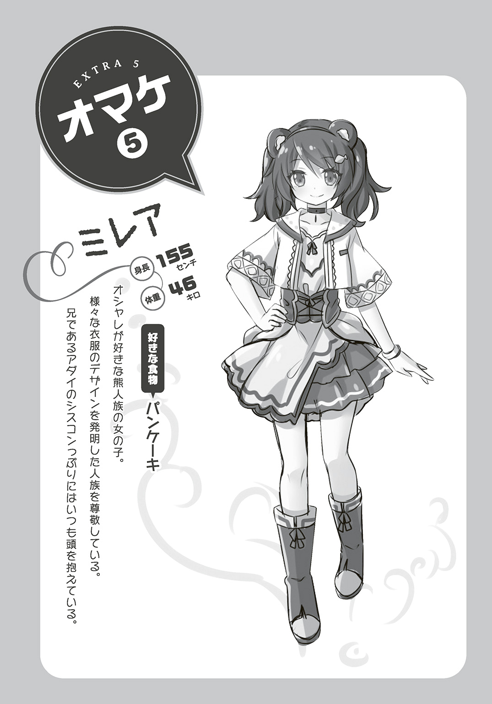
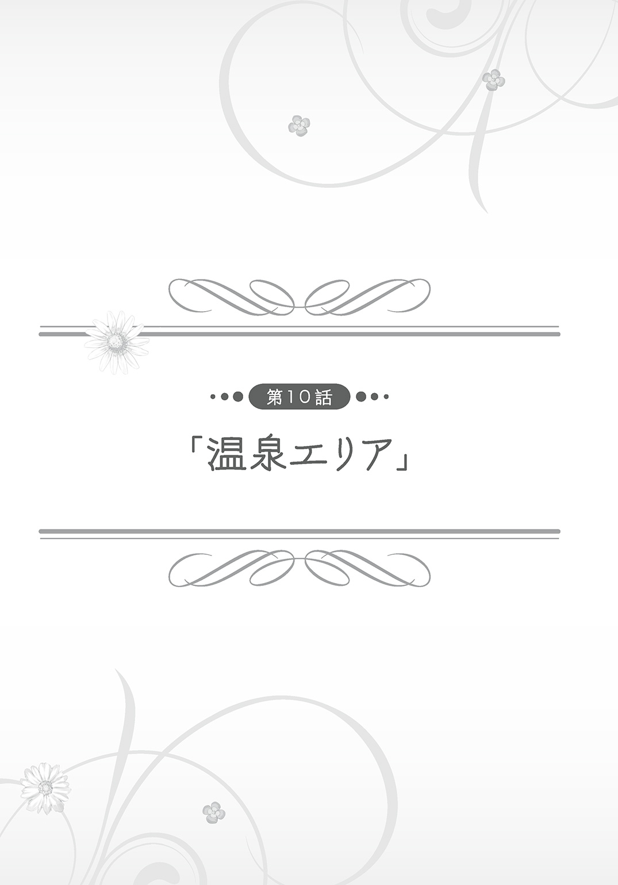
引っ越しの後は念願の温泉タイムである。
「あああ～。極楽極楽～！」
たっぷりと温泉を堪能した俺は、脱衣所のソファーで横になりカズミからマッサージを受けていた。
「マスター。背中のマッサージは完了いたしました。次はあおむけになって頂けないでしょうか？」
「あいよ。了解」
俺は命じられるままゴロンと寝返りを打つ。
カズミは相変わらず無表情のまま俺の体に跨って脇腹のマッサージを開始する。
「おかげんは如何でしょうか？」
「気持ちいいよ～。最高だよ～。カズミはマッサージの天才だなぁ」
冷静になって考えると、凄く際どい体勢になっているのに、エロい気持ちは微塵と湧いてこない。
さしずめこれは人をダメにするマッサージとでも名付けるべきだろうか？
それだけカズミのテクニックが常軌を逸しているのである。
「当然です。ワタシの体の八〇パーセントは、マッサージ機能ですからね。キャシー様の作ったゴーレムはそれぞれが各分野のエキスパートなのです」
「......マジか。あんなに強かったのに戦闘機能は二〇パーセントしかなかったんだ」
ぐえええっ。
二〇パーセントであの強さってことは、一〇〇パーセント戦闘に特化したゴーレムはどんだけ強いんだろう？
「いえ。残る二〇パーセントのうち一八パーセントはコミュニケーション機能になります。戦闘面の機能に関しては全体の二パーセントだけですね」
ツッコミを入れる気力すら湧かない。
リアには悪いが、益々下の階層を探索する気力が失せてきた。
「ああ。しかし、こうなってくると......コーヒー牛乳が飲みたくなってきたな」
「了解しました」
突如としてカズミは、マッサージの手を止めて脱衣所の中にある冷蔵庫に向かっていった。
「あるのかよ!?」
「ありますよ。人族の方は不思議ですね。キャシー様も温泉に入った後は何時もコーヒー牛乳を所望なされました」
冷蔵庫の中にはたしかに......ガラスビンに詰められた茶色の液体が存在した。
ぬおっ!?
本当にあるんだ......コーヒー牛乳！
飲みたい！
風呂上がりのコーヒー牛乳っていうのは、深夜に食べるラーメンと同じで蜜の味である。
だがしかし。
カズミがコーヒー牛乳のフタを開けた直後に異変は起こった。
「うげっ。この臭いは......？」
脱衣所の中に牛乳をふいてから一週間放置したゾウキンのような臭いが立ち込める。
「申し訳ありません。流石にキャシー様の技術力を以てしても、一万年間もコーヒー牛乳を保存することは敵わなかったようです」
「............」
まあ、こんなことじゃないかと思っていたよ。
むしろ一万年も経過しているのに、ビンが原型を留めているだけでも凄すぎる。
やはりキャシーっていう人族の技術力は、とんでもないものだったんだな。
さてさて。
マッサージも終わったことだし、気を取りなおしてもう一風呂浴びることにしようか。
～～～～～～～～～～
「うおー。何度見ても壮観だなぁ」
二度風呂を浴びるために温泉にやってきた。
石造りの和風テイストの浴場にいると、日本にいた時のことを思い出す。
広大な浴場の中には水風呂、電気風呂、牛乳風呂、ジャグジー、サウナ......などなど。
様々な施設が揃えられていた。
「さてと。どれに入ろうかなぁ」
さっきはオーソドックスな普通の温泉に入ったから、今度は少し変わり種をチョイスしてみようかな。
お。なんか葡萄の良い匂いがするぞ。
へぇ。
ワイン風呂なんてあるのか。
どれどれ。試しに入ってみようかな。
「主さま」
背後から聞き覚えのある声がした。
振り返ってみると、そこにいたのは裸にバスタオルを巻き付けた格好のリアであった。
「うわっ！ ど、どうしてここに......!? この時間は男湯になっているはずだけど......!?」
遺跡の中の浴室は男女が仕切りで区切られているわけではなかった。
そういうわけで俺は、時間によって浴場を男女で使い分けることに決めていたのである。
「申し訳ございません。出過ぎた真似だったでしょうか？ 主さまのお背中を流すことも配下である私の務めかと思いまして」
なるほど。
そ、そういう事情があるなら仕方ないよな？
あくまでこれは仕事の一環である。
故に全くエロい意味はない。
エロい意味はないのである。
「分かった。せっかくだし背中を流してもらおうかな」
俺は出来る限り下心を悟られないように返事をすると、浴室の椅子に腰を下ろす。
「主さま。お湯加減はどうでしょうか？」
「ああ。ちょうど良いくらいだと思うぞ」
なんだろう......この空気......。
浴室の中には温泉から発生した湯気と奇妙な緊張感が充満していた。
それにしても気になるのがリアの胸である。
でかい......。
バスタオル越しからでもリアの胸が大きく形が整っていることが分かる。
「あっ......」
これはまずい！
俺がおっぱいを凝視していたのがバレてしまったのだろうか。
リアは恥ずかしそうにバスタオルの位置を直すと両手を使って自らの胸を覆い隠す。
「......申し訳ありません。私の胸......見苦しいですよね」
「ご、ごめん！ リアの胸が魅力的過ぎてついっ！」
ぐわああああああああ！
俺は何を言っているんだろう。
言い訳にしても言葉を選ばないと変態度が増すだけだろうが！
「......ありがとうございます。やはり主さまはお優しいのですね。まさか私の大きく醜い胸を褒めて頂けるとは思いませんでした。私もミレアさんのような小さい胸に生まれてこれればよかったのですが......」
「............？」
謙遜で言っているようには思えない。
リアは本気で自分の胸に対して嫌悪感を抱いているようであった。
「もしかしてこの世界では小さい胸が人気だったりするのか？」
「ええ。もしかして主さまの世界では違うのですか？ 小さく慎ましやかな胸は全女性たちの憧れです。反対に大きな胸は愚鈍で卑しい印象を与えますので、男性から不評を買いやすいのです」
「...............」
世界が変われば美の基準も変わるということだろうか。
俺の価値観では巨乳は男なら誰しもが一度は憧れる人気属性だったのだが......。
この世界では大きな胸は疎まれる傾向にあるらしい。
「俺は別に気にしないけどな。どちらかというと巨乳派だし」
「巨乳派......!? は、初めて聞いた言葉です！」
俺の言葉を聞いたリアは目を丸くして驚いているようであった。
「......いえ、分かっています。男性の方が大きな胸を好まれるわけがありません。主さまはお優しいのでそのような言葉を即興で作られたのですよね。驚きました。主さまは文才にも長けているのですね」
「いやいや！ 本当だよ!?」
「主さまにそこまで気を遣って頂けるとは身に余る光栄です」
「............」
なんということだろう。
この世界の『巨乳派』はどんだけマイノリティなんだよ。
「う～ん。どうしたら信じてもらえるのかなぁ。俺は本当に大きな胸が好きなんだけど」
「......分かりました。そこまで言うのでしたらテストをさせて頂けないでしょうか？」
そこでリアはタオルの中から透明の小瓶を取り出した。
「それは......？」
「これは無理を言ってロゼに頼んで取り寄せてもらったボディーソープです。王都の会員制の店でしか手に入らない限定品で、手に入れるのには苦労しました」
中に入った液体を掌の中で泡立てながらもリアは言う。
その直後。
ボディーソープのふんわりとしたバラの香りが広がった。
そんなものを持っていたのか。
リアにも年頃の女の子っぽいところがあるんだな。
普段の言動が凄く大人びているから意外な一面が見れたような気がする。
「主さま。私が良いというまで前を向いて頂けないでしょうか」
「こんな感じか？」
「はい。それでは始めますね」
リアが宣言したその直後。
むにゅむにゅとして肌に吸い付く......どこか懐かしいような感触があった。
「ちょ!?」
慌てて振り返った時、俺は絶句した。
何故ならば――。
そこにいたのは、泡にまみれた胸を背中に押し当てるリアの姿だったからである。
「......やはり不快だったでしょうか？ もしも主さまの『大きな胸が好き』という言葉が本当ならば何も問題のない行為だと思ったのですが......」
不快なはずないじゃん！
嬉しいに決まっているじゃん！
どうしよう。
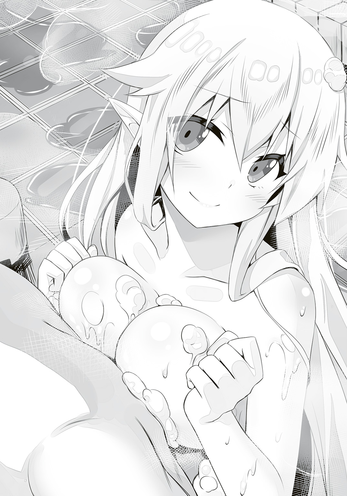
健気におっぱいで背中を洗ってくれるリアの姿がエロくて......下半身の辺りがムズムズしてしまう。
「も、もしかすると私の胸に反応して頂けたのでしょうか？」
「......面目ない」
「嬉しいです！ 主さまは本当に大きな胸がお好きだったのですね!?」
これは......結果オーライということだろうか？
他人に自分のコンプレックスを受け入れてもらえるのって凄く嬉しかったりするからな。
リアの表情は今までに見たことのないレベルで感激しているように見えた。
「次は前も洗いましょうか」
「まま、前だと!?」
「......出過ぎた真似だったでしょうか？ やはり主さまは大きな胸がお嫌いで......？」
おいおい。
そんな不安気な眼差しで見ないでくれよ。
流石にこのまま前を洗ってもらうことになれば俺の理性も限界突破――。
後戻りできないラインに達してしまいそうな気がする。
リアはそれでいいのだろうか？
そもそもリアは俺のことを好きなのだろうか？
尊敬してくれてるのは間違いないと思うのだが、それは俺がこの世界で唯一の人族だからなのだろう。
となるとリアが俺を慕ってくれるのは人間だからであって、俺個人を見てくれているわけではないんじゃないか？
いや。だからなんだって話だけど......。
リアが俺のことをどう思っていようが関係ないじゃん。
童貞をこじらせて......理想を追い求めすぎじゃないか？
だから二〇年以上生きてきて彼女の一人もできなかったのでは？
俺の頭の中に様々な思考が渦巻き始めた瞬間であった。
「キュゥゥゥウウウウウウウウウウ!?」
突如として浴室の中に女の子の悲鳴が響き渡る。
声のした方に目をやると、そこには丸々と太って肥満体型になった青髪の少女の姿があった。
「なにやっているんだお前......？」
体重は軽く一〇〇キロを超えているんじゃないだろうか。
そこにはかつての美少女だった姿はどこにもなかった。
「ギュウウウウウ！」
「うおっ!?」
ライムは苦しそうな声を漏らしながらも勢いよく口から水を吐き出した。
「ん......？ これは温泉の水か......？」
「......おそらくライムは、主さまが浸かった後の『残り湯』を飲み過ぎたみたいですね」
「残り湯......？ なんでまた......!?」
「主さまの体から流れ出た汗が混じっていたからでしょう。残り湯とは言っても強力な魔力を秘めているはずですから」
「............」
なるほど。
使った後の湯にまで影響を及ぼすとは......人間パワー恐るべしである。
「キュウウウウ」
大量に温泉の湯を飲んでしまったことが災いしたのだろう。
ライムは目を回しているようであった。
「仕方がありませんね。このままライムを放置しておくのもまずいでしょうし......部屋に運んでおくことにします」
それだけ言い残すと、リアはライムの体を抱き上げて逃げるように浴場を後にする。
冷静になって見てみると、リアの表情はトマトのように赤くなっていた。
ふむふむ。
やっぱりリアも無理をしていたんだな。
何故だろう？
残念だという気持ちはもちろんあるのだが......。
どちらかというと安心したという気持ちの方が強かった。
ああ。
今日のことでよく分かったよ。
肝心なところで何時も尻込みをしてしまう。
だから俺は童貞なんだなー（白目）。
～～～～～～～～～～
ところ変わってここは、王都から西方に二〇キロほど離れたマールクの村である。
葉司たちの住んでいる《オストラの森》から徒歩で三時間ほどの距離にある人口五〇〇人くらいの小さな村であった。
「......気に食わないですわ。わたくしは今完全にオフですのに」
村の中には不満気に唇を尖らせて馬を走らせるロゼッタの姿があった。
騎士団長のカズールから遺跡の探索任務を単独で任されたロゼッタは、本来であれば仕事を引き受ける立場にないのだが――。
月破壊の騒動による王都の治安悪化によって状況は一変していた。
中でも今回の事件は、下級の騎士では相手にならない厄介な案件であり――。
騎士団としてもロゼッタに頼らざるを得なかったというわけである。
「しかし、レガリア強盗ですか。随分と思い切ったことをするバカもいたものです」
レガリア強盗とは、最近王都を賑わせている、人族が残した遺産を狙った犯罪者のことである。
強力な魔力を秘めたレガリアは、王族たちの他に地方の有力者たちが手にしていることが多かった。
当然警備を搔い潜るのは至難の業であるが、驚くべきことにレガリア強盗は、ただの一回も失敗することなく目的の物を手に入れてみせている。
王国の騎士団が討伐のために派遣されたことも一度や二度ではないが、その全てが失敗に終わっていた。
「レガリア強盗というのは貴方ですわね......？」
暫く馬を走らせていると、やがて目的の人物と思しき人影を発見する。
事前の情報にあった身長三メートル近い大男という特徴から特定は容易であった。
「何だぁ......貴様はぁ......？」
振り返った男は顔中にミミズが這った痕のような傷を残していた。
そのあまりに醜悪な容姿は、ロゼッタの背筋に悪寒を走らせるほどのものであった。
「わたくしの名前はロゼッタ。王都ミズガルドから派遣された騎士団の一人です」
「ククク。そうかぁ......ロゼッタか......。ついにお前まで俺様に剣を向ける日が来るとはなぁ」
「なっ......!?」
ロゼッタは絶句した。
何故ならば――。
ようやくそこで目の前の男が、変わり果てた昔の上司であることに気付いたからである。
「デクス!? どうしてこのようなことを......!?」
「どうして......か。ククク。強いていうならば......この世界の真実に気付いたからだろうな」
醜悪な笑みを浮かべるデクス。
その表情にはかつての――誠実な仕事ぶりを見せてた頃の面影はどこにもなかった。
「まずは間違いを訂正しておこうか。先程はレガリア強盗と言ったが、お前さんは一つ勘違いしているぞ」
デクスはそう前置きすると、手にした短剣型のレガリアを握り潰す。
「これはハズレだ。俺様が欲しているのは、こんなちんけな玩具ではない」
「............っ!?」
酔狂、というより他はなかった。
何故ならば――。
人族が残した遺産であるレガリアは、そのどれもが金銭では取引不可能な価値を有していたからである。
「俺様が求めているのは聖遺物！ それも生きた人間の聖遺物だ！ 俺様はただ......人族の魔力を追って彷徨い歩いているに過ぎん！」
デクスの目的は葉司、唯一人であった。
結果としてレガリア強盗と呼ばれるようになったのは人族の魔力を感知して、その場を荒らしていたからである。
「んん？ もしかして貴様......人族に会ったのか？」
「さぁ......。なんのことかしら」
「クハハハッ！ 惚けても無駄だぜ......。貴様の体から漏れ出した魔力......あの時の......人間と同じものだぁっ！」
哄笑と同時にデクスの筋肉は膨張し、巨大化していく。
「こ、この魔力は......!?」
ロゼッタの目の前に広がるのは......圧倒的な絶望の光景である。
デクスの体内から漏れ出した魔力が少なく見積もっても自分の一〇倍......否。一〇〇倍近くはあるように見えた。
「......さてと。話してもらうぜ。お前の知っている情報を洗いざらい全てな」
底の知れない殺気に中てられることになったロゼッタは、恐怖で手足を震わせるのであった。
「......おはよう。リア」
何時もと変わらない平和な朝がやってきた。
目を覚ますと、俺の隣で横になっているリアがいた。
「おはようございます。主さま」
挨拶をすると、リアはニコリと微笑んで返事をしてくれる。
「それでは主さま。せっかくで悪いのですが......」
そこでリアは恥ずかしそうにモジモジと指を絡ませる。
寸前のところで理性を保っているが、もう我慢できないといった様子である。
「ああ。大丈夫だよ」
「......それでは失礼します」
俺がリアと『おはようのキス』を始めようとした直後であった。
ドシーン！ と。
何かが落ちたような音が上の階に鳴り響く。
「なんだ？ 上の階で何か起きたのか？」
「......どうやら何者かが地上で倒れたようですね」
エルフ族の特徴もあってかリアはずっと俺よりも耳が良い。
そんなリアが言っているのだから間違いないだろう。
「よし。そういうことなら上の様子を見にいってみるか」
「あっ......」
おいおい。
だからその世界が終わったような絶望顔はやめろって!?
仕方がないだろ。
一度キスが始まると、止めるタイミングが難しいんだよ。
キスをする機会を失ったリアが名残惜しそうに俺の唇を見つめるのであった。
～～～～～～～～～～
「あれ......あそこにいるのはたしか......？」
洞窟の入口まで移動すると、紅髪の少女が倒れていた。
「ロゼッタ!? 大丈夫か!?」
「その声は......ヨージ殿か......」
どういうわけかロゼッタは満身創痍の様子であった。
鎧はボロボロに砕かれ、傷ついた肌からは血が流れている。
「何があったんだ!?」
「そ、それが......。痛っっ！」
「......すまん。無理をしなくていいから」
思っていたより傷が深い。
苦痛で喋ることすら出来ないという感じだった。
「主さま。ここは私の回復魔法を！」
「分かった！」
俺の許可を受けたリアは素早くロゼッタの体に手を翳す。
「傷痕修復」
リアが呪文を唱えた直後。
掌からは青白い光が放たれる。
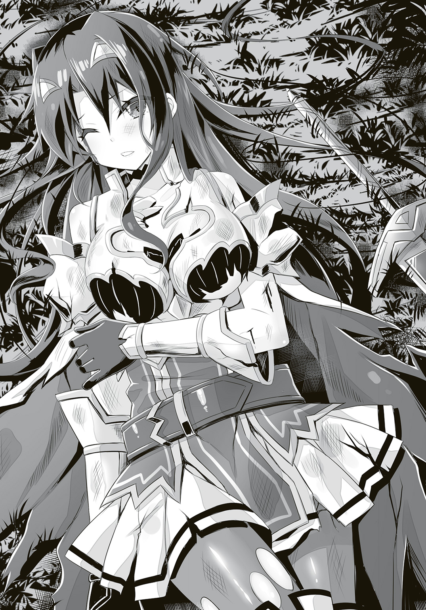
「ありがとうございます。お姉さま」
結論から言うと......リアの回復魔法は効果テキメンだった。
体の傷口はみるみるうちに塞がっていき――。
心なしか先ほどよりも痛みが和らいでいるようであった。
「お姉さま。今すぐにここから離れて下さい。デクスが......デクスが直ぐそこまで迫ってきています」
「「なっ」」
デクスというのは最初の遺跡で出会った猫耳のオッサンのことである。
こちらの正体を知り、人族のパワーを取り込んだデクスの存在は、俺たちにとって最大の脅威となっていたのである。
「わたくしがデクスと出会ったのは、ここから一〇キロほど離れたマールクの村でした。おそらくこのアジトが見つかるのも時間の問題かと」
あわわわわっ！
一〇キロって......その気になれば歩いて行ける距離じゃないか！
「気を付けて下さい。どうやらデクスは人族の魔力を感知して各地を彷徨い歩いているようです。人族の魔力を感知すれば見境なく襲撃を繰り返しているようですから」
そこまで聞いたところで俺は重要な事実に気付く。
ん。
ロゼッタがデクスと最後に会ったのは西方に一〇キロほど離れた地点なんだよな？
ということは......俺たちのアジトに着く前に熊人族の村がある。
アダイたちが危ない！
なんせあの村は、俺の髪の毛に含まれる魔力を使って村おこしをしているのである。
デクスが人族の魔力を感知しているならば、襲撃を受ける可能性が高いんじゃないか!?
「なあ。相談したいことがあるんだけど......」
こうして俺は敵の襲撃に備える前に、熊人族の村の様子を見に行くことに決めるのであった。
～～～～～～～～～～
デクス襲撃の知らせを受けた俺は、熊人族の村に向かって走っていた。
情報をくれたロゼッタは、怪我人ということでアジトに残している。
護衛にはライムたちを付けたので戦力的には不足がないと信じたい。
「な、なんだこれは!?」
村についた俺は絶句した。
逃げ惑う人々。火のついた家。
熊人族の村は以前に訪れたときの賑やかな雰囲気から一転。
人々の恐怖に満ちていた。
「ヨウジさまっ!?」
暫く歩くと涙で顔をグチャグチャにしたアダイに遭遇する。
「どうした！ 何があった!?」
「わ、分からねえ。とんでもなく強い......猫耳の男が現れて村を滅茶苦茶にしていったんだ！ 野郎......！ ヨウジさまの存在にも気付いているようだった！」
やはりこの騒動はデクスの仕業か！
あのオッサン......許せねえ！
目的は俺一人だろ。
無関係な人たちを巻き込みやがって！
「......ミレアちゃんは無事なのか？」
「ウグッ。そ、それが......」
アダイの顔がグニャリと歪んだ。
「あの野郎......こともあろうにウチの妹を攫っていきやがったんだ」
「なんだって!?」
「返して欲しければヨウジさまを村の教会に連れてくるように脅された。だから俺は、これからヨウジさまのいる洞窟に向かおうとしていたんだ」
「............」
デクスは人族の魔力を手掛かりにして俺の行方を探っていると言っていた。
だから村人たちの中で一番人間パワーを受け取ったミレアちゃんが、標的にされるのは納得である。
クソッ！
俺のせいでミレアちゃんが危険な目に......。
「主さま。デクスの元に向かわれるのですか？」
「......ああ。このままアイツを野放しにしておくわけにはいかないしな」
正直に言うと凄く怖い。
けれども。
一人の人間として......この世界に存在するたった一人の人族として、ここで俺が逃げ出すわけにはいかない。
村の人たちが......ミレアちゃんが危ないんだ。
「でしたらこれをお受け取り下さい」
「これは？」
そこでリアが差し出したのは、細かい刻印が施された指輪だった。
「我が一族に伝わる『封魔の指輪』と呼ばれるアイテムです。装着したものが使う魔法の威力を千分の一にまで弱める効果があります」
「......どうしてそんなアイテムを？」
魔力強化なら分かるけど、弱体化アイテムを渡す理由が見えてこない。
「魔法の威力をコントロールするためです。主さまが本気で魔法を使うと、この大陸は海の底に沈むことになるでしょう。しかし、この指輪があれば話は別です。大陸ではなく......村一つが滅びるくらいの被害で済むかもしれません」
「............」
どちらにせよ村一つは滅びるのかよ!?
......でもまあ、最悪の事態に対する保険と考えると悪くない。
俺の魔法は下手に使うと、月を破壊してしまうような威力を持っているからな。
魔法を使わないで倒すに越したことはないが、この指輪で強制的に威力を下げればリスクを抑えられるというわけか。
流石はリア。
こういう時は本当に頼りになる。
リアから指輪を受け取った俺は、満を持してデクスのいる教会に向かうのであった。
～～～～～～～～～～
教会につくなり俺の視界に飛び込んできたのは、全長五メートルにも達しようかという立派な銅像だった。
その銅像はどこからどう見ても単なる人間の姿にしか見えなかった。
もしかしてこの教会は、人族を祀っているのだろうか？
そういえば前にリアからこの世界の宗教は、人間が信仰の対象になっているって聞いてたけど......。
あの話は本当だったんだな。
「待っていたぜ......。今か今かとこの時をよぉ......！」
教会の中に聞き覚えのある声が鳴り響く。
声のした方に目を向けると、そこにいたのは身長三メートル近い猫耳のオッサンだった。
「ヨージさん!?」
良かった。
ミレアちゃんは無事みたいだ。
猫耳のオッサンの近くには、十字架の上に磔にされているミレアちゃんの姿を確認することができた。
「ヨージさん！ 逃げて下さい！ このままでは......ヨージさんが......ヨージさんが殺されちゃう......」
俺の姿を見たミレアちゃんは、恐怖で取り乱しているようであった。
「大丈夫。落ち着いて。俺たちはミレアちゃんを助けに来たんだよ。俺たちが来たからにはもう大丈夫！」
ふふふ。
単なるクソ雑魚魔力タンクに過ぎない俺とは違って、リアは王都の騎士団で名をはせた戦闘のプロフェッショナルだからな。
リアがなんとかしてくれるだろう。
「......ヨ、ヨージさん!?」
俺の言葉を聞いたミレアちゃんは、感動で目を潤ませているようだった。
うぐっ。
こっちとしてはバリバリの他力本願なので心が痛い！
「デクス！ バカな真似は止めて今直ぐに降伏しなさい！」
遺跡での裏切りに対して思うところがあるんだろうな。
猫耳のオッサンの姿を見たリアは珍しく怒りの表情を浮かべていた。
「んん？ 薄汚いエルフ風情が......。誰に向かって口を利いているんだ？」
リアが詰め寄ると、デクスは自信に満ちた笑みを浮かべる。
「......己の慢心を後悔することですね。人族の力を手に入れたのは貴方だけではないのですよ！」
リアの言葉は尤もである。
たしかに猫耳のオッサンは、人族の髪の毛を手に入れてパワーアップしたのかもしれない。
けれども。
それならウチのリアだって同じように強くなっているはずだ！
「火炎連弾！」
出た！ リアの火炎連弾！
これは勝利フラグ！
毎日の『おはようのキス』の成果だろうか？
以前に見た時と比べて魔法の威力は激増しているように見えた。
「ハッハー！ 無駄無駄！」
「なっ」
だがしかし。
驚くべきことにリアの魔法は、デクスの体に到達する前にかき消されることになった。
これは一体......どういうことだ？
デクスの周囲に浮かんでいるバリアーはゴーレム......カズミと全く同じものである。
たしか......ＡＭＳとか言ったっけ？
どうして猫耳のオッサンが失われた人族の技術を持っているんだろう？
「主さま！ お気をつけて！ どうやらデクスは、私以上に聖遺物のパワーを取り込んでいるようです」
驚きはしたが、納得の気持ちが先にきた。
リアの攻撃に全く動じないところを見ると、デクスがそれ以上の人間パワーを取り込んでいる可能性は高い。
「リア、提案がある。ミレアちゃんを連れて逃げてくれないか？」
こうなってしまっては仕方がない。
当初の予定ではリアがデクスと戦っている途中に俺がミレアちゃんを連れて脱出するつもりだったが、事情が変わった。
「し、しかしそれでは主さまが......」
「これからアレをやろうと思う。だから街の人と一緒に出来るだけ遠くに避難して欲しいんだ」
「............!?」
俺の言葉を聞いたリアは一瞬、驚いたような表情を浮かべるが、直ぐに納得してくれたようだった。
「デクス！ お前の目的は俺だろう！ 俺は逃げも隠れもしねえ！ 正々堂々と勝負しろ！」
「フフ。違いねえ！ これからお前さんの体が俺様のものになると考えると血が沸くねえ......」
今だ！ リア！
俺がデクスを挑発しながらリアにアイコンタクトを送る。
「......主さま。ご武運を」
すると、その直後。
リアは素早く地面を蹴ると、磔にされているミレアちゃんの体を抱きかかえて脱出することに成功する。
さてさて。
これで全ての準備は整った。
最初に立てたプランからは少し狂ったが、後は俺が無事に猫耳のオッサンを倒せば事件は解決する。
「......魔法を使うのは月破壊の一件以来だな」
正直に言うと凄く怖い。
魔法を使うことを考えると、トラウマが蘇って手足が震えそうになる。
しかし、俺がやらずに誰がやる！
この村の中でアイツを倒せる可能性があるのは、人族である俺だけなんだ。
決意を新たにすると、リアから貰った封魔の指輪をギュッと握りしめるのであった。
「やけにアッサリと人質を解放してくれたみたいだな」
「ククク。問題ねえ。元より俺様にとってはお前以外の存在など眼中にないからなぁ」
うげええええええ。
本当に気持ちが悪いなこのオッサン。
耐えられないからヤンデレ美少女に脳内変換することにしよう。
「嬉しいぞ。ようやく二人きりになれたな。お前の血が！ 肉が！ 眼球が！ どれほど俺様を焦がれさせたか......お前には分かりはしないだろう」
ごめんっ！
やっぱ無理いいいいいい！
脳内のヤンデレ美少女フィルターを通しても、猫耳のオッサンの発言には耐えがたいものがあった。
「さてと。ショータイムだ！」
猫耳のオッサンは腰から剣を抜くと俺に向かって突進する。
なっ！ 武器を使うとは卑怯だぞ！
「うおっ！」
巨体の割にオッサンの動きは素早かった。
危ねぇっ！
あと少し反応が遅れていたら胴体と首が分離していたぞ!?
「どうしたぁ!? 何時までそうやって逃げ回っているつもりだっ！」
仕方がない。
出来れば最後の手段は使わずに倒したかったんだけどな。
あまり悠長なことをしていると、こっちの首が斬り落とされてしまいそうである。
「今からとっておきの魔法を見せてやる。お前の悪行もそれまでだ！」
「ハンッ！ やれるもんならやってみろ！」
ＡＭＳを使うことの出来るデクスにとっては、魔法など恐れるに足りないということか？
いいだろう。
その慢心が命取りになるということを教えてやろう！
俺が使用を考えているのは、ここに来る前にリアに教えてもらった『発火』という魔法である。
本来であれば『発火』の魔法は、家庭内で料理などに使用する『生活魔法』に区分されるものらしい。
しかし、そうは言っても人族の俺が使うと話が違ってくる。
封魔の指輪を装着した状態でもデクス一人を倒せるだけの威力は、充分に出るだろうという太鼓判はもらっている。
つまりは......この魔法を使えば村を消滅させずともデクスを倒すことが出来るのである。
「発火！」
俺が呪文を唱えた次の瞬間。
眼を覆いたくなるような途方もない光が視界を遮った。
んっ。
んんんんん？
本当にこれが発火の魔法なのか？
デクスに向けて放たれた発火の魔法は、控えめに言ってもリアの火炎連弾の数十倍の威力を有しているように見える。
デクスの体に発火の魔法が命中したとき――異変が起こった。
ドガァァァァァァァン！ と。
突如として身の毛もよだつような大爆発が発生する。
天井は吹き飛んで、飾られていた銅像は倒壊し、教会は一瞬にして焼野原に変わってしまう。
本当にこれが......千分の一の威力かよ!?
「カハァッ......。ククク。効いたぜ......」
噓......だろ......!?
自分でもドン引きするような威力の魔法を受けたにもかかわらず......デクスは立ちあがってみせた。
「まさか伝説の火属性魔法――煉獄を受ける日が来るとは思いもしなかったよ。流石は人族と言ったところか」
「............」
いやいやいや。
俺が使ったのはそんな大層な名前の魔法じゃなかったよ？
単なる料理とかに使う生活魔法なわけなのだが......。
しかも威力が千分の一になっているやつ！
「仕方がない。出来ればコイツだけは使いたくなかったんだけどな」
猫耳のオッサンは懐をゴソゴソと漁ると、パクリと口の中に何かを放り込んだ。
「なっ」
これは一体......どういうことだ？
オッサンの体は四メートル......五メートル......。
いや、更に大きく巨大化していく。
最終的に現れたのは、全長七メートル近い大きなオッサンだった。
えーっと......怪獣大戦争でも始める気ですか？
「ギオオオオオオオオオオオオオオス！」
巨大化したオッサンは、奇声を発しながらも瓦礫の陰に隠れた俺を探しているようであった。
クソッ！
こうなったらもう一度、魔法で追撃をかけるしかない。
「発火！ 発火！ 発火！」
畳みかけるような三連撃。
だがしかし。
俺の魔法は巨大化したデクスに有効なダメージを与えることは出来なかった。
足止めとしては一定の効果を上げているようだが......それだけである。
デクスは発火の魔法による爆風に耐えながらもジリジリと俺との距離を縮めていた。
「プチファイ......」
言いかけたところでハタと気付く。
な、なんじゃこりゃー!?
おそらく俺の使用する魔法に耐えきれなかったのだろう。
先程まで装着していた『封魔の指輪』は、ピキリとヒビが入って使い物にならない状態になっていた。
「これで終わりだあああぁぁぁぁ！」
オッサンの攻撃。
その巨大な体を駆使してデクスは掌を使って俺の体を押し潰そうと試みる。
畜生っ！
せっかく異世界で理想の生活環境を手に入れたのにここで終わってたまるかよ！
俺は最後の悪足搔きとして勢いよく両手を突き上げてデクスの掌を押し返す。
異変が起きたのはその直後であった。
「ウガァァァアアアアアアアアアア！」
これは一体どういうことだろう。
どういうわけか俺の両手に突き上げられたデクスの体は、天高くに投げ出された。
そのスピードは凄まじく、瞬く間にデクスの体は空の青色の中に消えて行く。
「ゴバアアアアアアアア!?」
それから。
一〇秒くらいの時間が経っただろうか。
推定一〇〇メートル近い高さから地面に落下したデクスは、口から血を吐き出して完全に伸び上がっているようであった。
「......終わったのか？」
激しく地面に叩きつけられたデクスは起き上がる気配がない。
そこで俺は、全く意図しない形で戦闘に勝利したことに気付く。
どうしてデクスの体は空に投げ出されることになったのだろうか？
実を言うと理由については一つだけ心当たりがあった。
本来ならば異世界に召喚された直後に気付くべきことだったのだろう。
けれども。
現代での生活により培われた『どうせ俺はダメなやつ』という刷り込みが頑なにそれを認めようとしなかったのだと思う。
なんというか......凄く今更な気がするんだけど......。
もしかして俺......異世界に来てからスゲー強くなっていないか？
この世界における人間の魔力が常軌を逸していることは月破壊の一件で学習したが、身体能力まで強くなっているとは思わなかった。
しかし、膨大な魔力を獲得した結果、身体能力も強化されたと考えると今回の結果にも納得がいく部分がある。
いずれ俺が人族の力を完璧に扱いこなせるようになったら......世界を思うがままに変えてしまうことすら出来るのではないだろうか？
長きに渡る戦いの決着を前にした俺は、胸の中に様々な疑問を抱くのであった。
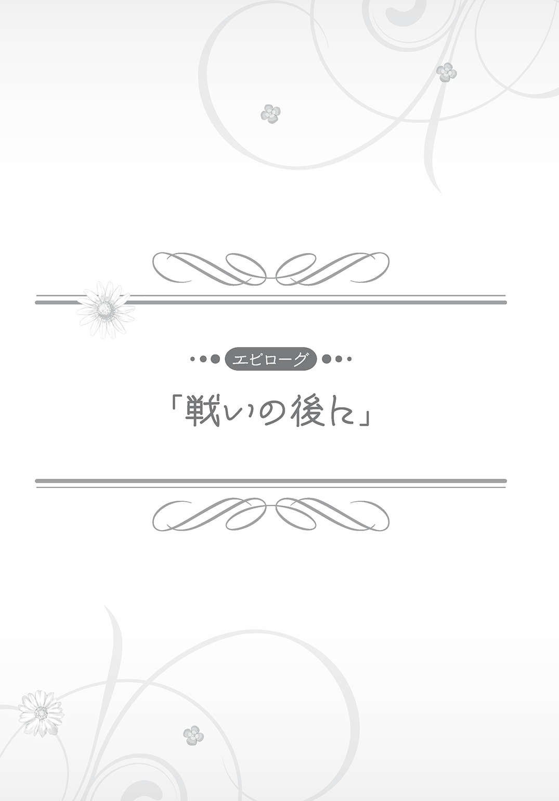
それから。
デクスとの戦いが終わってから直ぐのことであった。
「主さま！」
聞き覚えのある声がしたかと思うと、そこにいたのはリアであった。
おっ。
もしかしてこれは......戦いに勝利する度に胸を押し付けてもらえるシステムが作動したのだろうか？
勢いよく向かってくるリアは、今にも俺の胸に飛び込んできそうな感じだった。
「ヨージさん！」
「どわっ！」
予想外の方向からの抱擁。
意外なことにリアよりも先に俺に抱き付いてきたのはミレアちゃんだった。
「生きていたんですねっ！ アタシ......ヨージさんが生きていてくれて......本当に良かったです......」
誰かに心配されるっていうのは、こんなにも心温まるものなんだな。
胸の感触はそんなに感じなかったが、ミレアちゃんの感情はビシビシと伝わってきた。
「そ、その役目は......本来であれば私が務めるところでは......？」
一方、ミレアちゃんと対照的なのはリアである。
完全に先を越されることになったリアは激しく落ち込んでいるようであった。
だからその......世界が終わったかのような絶望顔は止めろって！
「ところでリアは、どうしてここに？」
「......申し訳ありません。主さまからは避難の指示を受けていたのですが、教会の方から爆発音が聞こえ......居ても立っても居られなくて......」
「あー」
俺が千分の一の発火を使ったタイミングか。
あれだけの爆発が起きたら心配になるのも頷ける。
「ヨウジさまー！」
そうこうしている内に見覚えのある男が駆けつけてくる。
「良かった！ ミレア！ 無事だったんだな！」
ミレアちゃんの姿を見たアダイは、ビックリするくらい大量の涙を垂れ流す。
その直後。
感極まって実の妹に向かって勢いよく飛びついた。
「兄貴！ キモイッ！ ドサクサに紛れて抱き付かないで！」
ところが――。
ミレアちゃんの神回避によってアダイは、盛大に地面の上を滑っていくことになる。
前々から思っていたけどミレアちゃんは、アダイに対して辛辣だよな。
でもまあ、血の繫がった妹なんて普通はこんな感じなのかもしれない。
現実は世知辛い。
「なあ。アダイ。お前に謝らなければならないことがあるんだが」
「ヨウジさまは村を救ってくれた英雄だぞ？ 何を謝ることがあるというんだ！」
「いや......。その......見ての通り完全に教会を壊してしまったんだけど、大丈夫だったのか？」
千分の一の発火によって、村の教会は見るも無残な状態になっていた。
建物の外装はボロボロに剝げて、中にある銅像の頭は爆発四散している。
日本人の俺にはあまり実感がないのだが、こういう宗教的なものを破壊するのは非常にヤバイ気がする。
「へへっ。気にする必要はないさ。こんなもの修理をすればなんとでもなるからな！」
俺の予想に反してアダイの表情に悲観的な感情は見られなかった。
「そうだ！ 新しく建てる教会にはヨウジさまをモデルにした銅像を建てることにしよう」
「......俺の銅像？」
「ああ。元々、ウチにあった銅像は、どこの誰とも分からない人族をモデルにしていたんだよ......。だがまあ、せっかくここに村を救ってくれた人族がいるんだ！ これは建て替えない手はないだろうよ！ 俺たちにとっての神はヨウジさま以外にありえないからな！」
いくらなんでも......この男は村長権限を濫用しすぎじゃないか？
俺がこの村の住人だったら暴動でも起こしてやりたいところである。
～～～～～～～～～～
それからのことを話そうと思う。
突如として熊人族たちを襲ったデクスは、ロゼッタを中心とした騎士団メンバーに逮捕されることになったらしい。
俺としてはデクスの口から情報が漏れないか心配だったのだが......。
どうやらその心配は杞憂だったみたいである。
それというのも聖遺物の過剰摂取によって、デクスの知能は著しく低下し、他人とコミュニケーションを取るのが困難な状態に陥っていたからである。
なんだか少し気の毒だが、人族の力に溺れたデクスの自業自得とも言えるだろう。
やはり気掛かりなのは、デクスに人族の力を与えた存在である。
リアの話によれば俺以外に生きた人族が存在することはないということであったが、今回の一件で疑惑が上がってきた。
もし人族が存在しないのならば......どうしてデクスはあれほどのパワーアップを遂げることが出来たのだろうか？
色々と謎は深まるばかりである。
「......これは一体どういうことだ？」
とある日のこと。
目を開けると、何故か俺の四肢は鎖のようなもので繫がれていた。
付け加えて言うのならば、昨日の夜に身に着けていたはずの寝間着がどこにもない。
どういうわけか俺はパンツ一枚で拘束された状態であった。
「お目覚めですか。マイマスター」
「......カズミ。この鎖はお前の仕業か？」
「否定。正確に言うと、マスターの体を拘束するように命じられたのはリア様にございます」
「リアの？」
いまいち話が見えてこない。
どうしてリアが俺の体を拘束する必要があるのだろう。
「ただいま戻りました」
「あ。リア！ ちょうどいいところに......」
噂をすれば影である。
絶好のタイミングでリアが部屋に入ってきたので問いただそうとしたところ――。
「キュー！ キュー！」
「失礼いたしますわ」
「えへへ。お邪魔しまーす」
リアの後からライム・ロゼッタ・ミレアちゃんという三人の女の子たちが現れる。
「どうして三人がここに？」
「......主さま。今日は事前にお伝えした通り、強化合宿の日ですよ」
「あー」
言われてみるとリアからそんな予定を聞かされていた気がする。
もっとも......その時は寝ぼけていたので内容が全く頭に入っていないのだが。
「ごめん。よく話を聞いていなくて......。ところでその......強化合宿っていうのは一体何をすればいいんだ？」
「ご安心下さい。主さまは何もする必要がありません。ベッドの上で横になって頂くだけで大丈夫です」
「............？」
リアの言葉を聞いた俺は頭上にクエスチョンマークを浮かべる。
強化合宿なのに......何もする必要がない？
一体それはどういう意味だろう？
しかし、その直後。
俺はリアの意図したところを即座に理解することになる。
「それでは私から失礼します」
リアはそう前置きすると金色の前髪を耳にかける。
この仕草はリアが俺とキスをする前に決まってみせるものであった。
そうか！
そういうことか！
強化合宿っていうのは俺ではなくリアたちを鍛えるためのものだったんだな。
だから聖遺物を与える側の俺は何もする必要がないのだろう。
これで全て繫がったわ。
唾液同士が交わる淫靡な音が部屋の中に響き渡る。
「わわわ！ リアさんのキスって......凄くエッチです」
「......グッ。お姉さまとの接吻を独り占めとは......羨まし過ぎますわ！」
「キュー！ キュー!?」
俺たちのキスを目にした美少女たちは、三者三様のリアクションを見せていた。
「それでは三人とも。さっそくで悪いのですが、作業に取り掛かって下さい」
「え......？」
リアの指示を受けた三人の美少女たちは、それぞれパンツ一枚の俺の周囲に立ち始める。
「ちょっと待て。もしかして強化合宿っていうのは......？」
「申し訳ありません。伝え忘れていたでしょうか？ 強化合宿とは......これから主さまの守護を務める私、ライム、ロゼッタ、ミレアさんの四人の魔力を同時に強化しようという趣旨のイベントになっています。
こちらの方が一人一人を強化するよりも効率が良く、主さまの安全性を確保することができると考えまして」
「............」
いやいやいやいや。
全く聞いていないよ！
覚えていないだけかもしれないけどさ！
そんな乱交みたいな不健全なプレイは認められるわけが......。
「ひぎいいいいいいいいっ！」
そうこうしている内に強化合宿はスタートしてしまったらしい。
四人の美少女から体中を舐め回されることになった俺は、悶絶の悲鳴を上げるのであった。
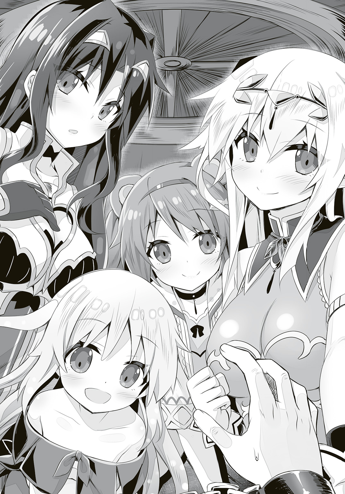
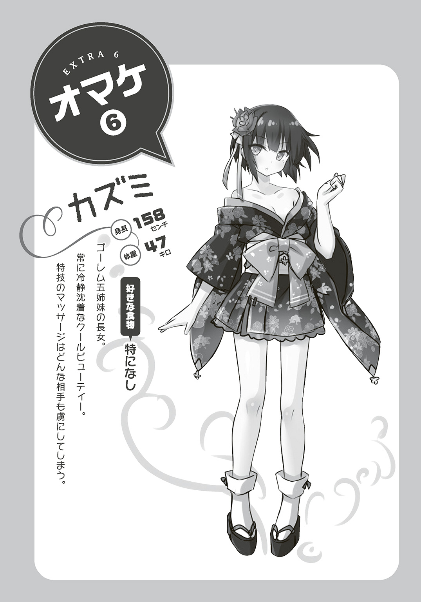
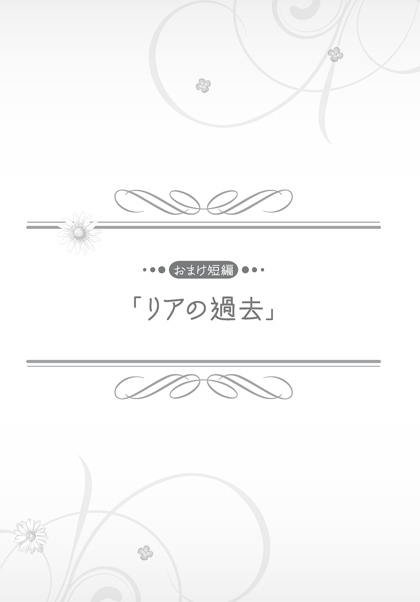
時は葉司が異世界に召喚されるより一〇年以上前に遡ることになる。
王都から北に二〇〇キロほど離れたところにノーミルと言われる村があった。
毎年、冬の時期に厳しい寒さに見舞われるこの村は農業に向かず、住人たちは原始的な狩猟によって生計を立てていた。
リアはこの村の近くで捨て子として発見されて保護される立場にあった。
この世界ではエルフの捨て子は、珍しい存在ではない。
エルフという種族には異常なまでに『血筋』に拘る文化があった。
他種族と交わることなどもってのほか。
同種の中でも少しでも流派が違うと交わることを許されない。
このような背景もあって望まれない血筋を持って生まれたエルフの子供たちは、心無い両親に捨てられ、施設の中で育てられるケースが常態化しているのであった。
「司祭さま。今日もまた......あの本を読んで頂けませんか？」
リアはこの村の年老いた司祭の元で生活をしていた。
「またかい。リアは本当に信仰深いんだねぇ」
「......どうでしょうか。私にもよく分かりません。ただあの本の物語に浸っていると不思議と心が落ち着くのです」
アーテルフィアには大きく分けて二種類の宗教があった。
それ即ち、はるか昔、今日の文明の礎を築いた『人族』を信仰の対象としたヒューズ教。
人族が生まれる以前にこの大地を創ったとされる『創世神』を信仰の対象としたゾルク教である。
リアが生活していたヒューズ教の施設には、『人族』を祀った内容の書物が山のように置かれていた。
「くだらねぇ。とっくの昔に死んじまった種族を祀って何になるんだ」
「まったくだよ。本当に人族が俺たちを救ってくれるなら、今直ぐに食物を分けてもらいたいね」
この教会をたまり場にしていた悪ガキたちは口ぐちに悪態をついていた。
しかし、それも仕方がないことだとリアは思う。
信仰のない者にとって宗教は、何の生産性も持たないものなのだから。
リア自身どうして自分が熱心にヒューズ教の本を読もうとするのか、理由を理解することが出来なかった。
～～～～～～～～～～
それは――夏が過ぎて肌寒くなってきた秋のことであった。
「天竜だ！ 天竜が降りてきたぞ！」
リアの住んでいたノーミルの村は一日にして地獄に変わることになる。
雲の上で生活する天竜は、滅多なことでは地上に降りてこないことで知られていた。
しかし、一〇〇年に一度の『捕食』の際には、その旺盛な食欲をいかんなく発揮して小さな村を丸ごと食い潰すこともあった。
「......人間さま。どうか......どうか私のことを助けて下さい」
避難に遅れたリアは教会の中に閉じこもることしか出来なかった。
机の下に隠れてお気に入りの本を抱えてブルブルと震えていた。
瞬間――リアは理解した。
自分が熱心に信仰を続けていたのは、単純に『縋る相手』が欲しかっただけなのだろう。
親の温もりを知らずに育ったリアにとって『人族』とは唯一、心置きなく寄りかかることの出来る存在だったのである。
それから。
どれくらいの間、机の下に隠れていただろうか。
爆発音が止まって周囲が落ち着いたことを確認したリアは、恐る恐る教会の扉を開けてみる。
すると、どうだろう。
そこには辺り一面焦土と化した変わり果てた村の景色があった。
「............助かったの？」
何故だろう。
周囲の建築物は跡形もなく焼け焦げているのだが――。
リアが避難していた教会だけは不思議なことに無傷のままであった。
これは後になって分かった話であるが――。
村の教会は太古に人族が残した建築物を再利用して造られたものであったらしい。
故に耐久性において現文明の建築物とは比較にならないほど頑強だったのである。
最終的に天竜は村の人口の九割の命を奪っていくことになった。
それでも生き残ることが出来たのは、ひとえに自分の祈りに応えてくれた『人族』のおかげである。
周囲の者に話すと笑われるかもしれないが――。
少なくともリアはそう思っていた。
天竜の襲撃によって全てを失ったリアは、新しい居場所を探して王都に向けて旅立つことを決意する。
王都で生活するようになってから暫くの後。
万物に長けた能力を買われたリアは、騎士団の見習いとして雇われ、凄まじいスピードで頭角を現していくことになるのだが――。
それは少し先の話である。
あ と が き
柑橘ゆすらです。
そんな感じで『最強の種族が人間だった件』の一巻でした。
ファンタジー世界において『人族』というと読者の方々は、どのような印象を持っているでしょうか。
なんとなく『繁殖力が高く、協調性に優れている』くらいのイメージでいる方が多いと予想しています。
身体能力では獣人に劣り、知能ではエルフに劣り、魔力では魔族に劣ります。
要するに良く言うとバランスがとれていて、悪く言うと没個性な種族が人族なのです。
人間が最強な世界があったっていいじゃないか！
そんなことを考えているうちに生まれたのが今回の作品になっています。
今後とも読者の皆様が楽しめるようなストーリーを頑張って考えていきますので、応援の方よろしくお願いします！
以下、宣伝タイム。
私、柑橘ゆすらは「講談社ラノベ文庫」というレーベルから『異世界支配のスキルテイカー』という作品を出版しています。
内容の方は、ごくごく普通の高校生が一〇〇人の奴隷ハーレムを作るために頑張るというストーリーになっています。
本作『最強の種族が人間だった件』とは設定を共通させている部分も多いので、この本を読んでいただけた方ならば、ニヤリと出来る場面も多いと思います。
この本の巻末には広告も入れていただきました！
興味のある方は、『異世界支配のスキルテイカー』の方も何卒よろしくお願いします。
それでは。
次巻で再び皆様と出会えることを祈りつつ――。
柑橘ゆすら
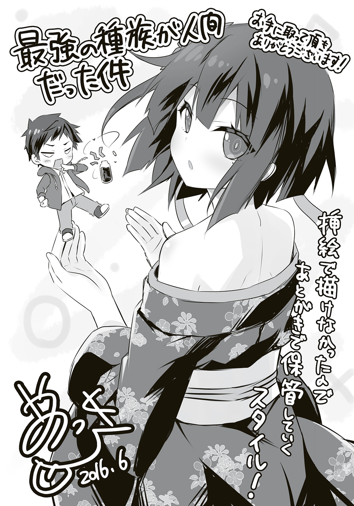
著者紹介
柑橘ゆすら かんきつ ゆすら
ライトノベル作家４年生。講談社ラノベ文庫では『異世界支配のスキルテイカー』というライトノベルを書いています。最近食べて美味いと思ったものはグァバです。
Twitter:@KankitsuYusura
illustration
夜ノみつき やの みつき
北海道在住、Ｂ型のおとめ座。獣耳と銀髪が大好き。
最近は一人映画にはまっています。
ダッシュエックス文庫DIGITAL
最強の種族が人間だった件１
エルフ嫁と始める異世界スローライフ
著者 柑橘ゆすら
© YUSURA KANKITSU 2016
２０１６年７月31日発行
この電子書籍は、ダッシュエックス文庫「最強の種族が人間だった件１ エルフ嫁と始める異世界スローライフ」
２０１６年６月29日発行の第１刷を底本としています。
発行者 鈴木晴彦
発行所 株式会社 集英社
〒１０１－８０５０
東京都千代田区一ツ橋２丁目５番10号
０３－３２３０－６０８０（読者係）
制作所 株式会社ＩＣＥ
本作品の全部また一部を無断で複製、転載、改竄、インターネット上に掲載すること、および有償無償に関わらず、本データを第三者に譲渡することを禁じます。なお個人利用の目的であっても、コピーガードを解除しての複製は、法律で禁じられています。